A1_flowkit · Fable 5.2 · attempt NVZNykU
Batch fb2 · job fb2_A_base_screen_rep2_flowkit_claude-fable-5-2 · trial A_base_screen_rep2_flowkit__NVZNykU. Long tool outputs are cut at 6,000 characters.
Score
0.48
0.48
Minutes
11.6
11.6
Agent cost
$3.71
$3.71
Steps
125
125
Screenshots / images
18
18
2
tool call · Bash
cd /task; ls -la inputs inputs/raw | head -60; cat inputs/gating_strategy.md; cat inputs/plate_layout.csv; ls outputs; ls /root/.claude/projects/-task/memory/
3
tool output
inputs:
total 20
dr-xr-xr-x 3 root root 4096 Nov 10 16:58 .
drwxr-xr-x 4 root root 4096 Nov 10 17:03 ..
-r--r--r-- 1 root root 3051 Nov 10 16:58 gating_strategy.md
-r--r--r-- 1 root root 3037 Nov 10 16:58 plate_layout.csv
dr-xr-xr-x 2 root root 4096 Nov 10 16:58 raw
inputs/raw:
total 330096
dr-xr-xr-x 2 root root 4096 Nov 10 16:58 .
dr-xr-xr-x 3 root root 4096 Nov 10 16:58 ..
-r--r--r-- 1 root root 6608908 Nov 10 16:58 Caspase_KO_RNAswap-rep2_caspase_Group_A1.fcs
-r--r--r-- 1 root root 12097360 Nov 10 16:58 Caspase_KO_RNAswap-rep2_caspase_Group_A10.fcs
-r--r--r-- 1 root root 8236216 Nov 10 16:58 Caspase_KO_RNAswap-rep2_caspase_Group_A11.fcs
-r--r--r-- 1 root root 11918584 Nov 10 16:58 Caspase_KO_RNAswap-rep2_caspase_Group_A12.fcs
-r--r--r-- 1 root root 7991920 Nov 10 16:58 Caspase_KO_RNAswap-rep2_caspase_Group_A2.fcs
-r--r--r-- 1 root root 8019820 Nov 10 16:58 Caspase_KO_RNAswap-rep2_caspase_Group_A3.fcs
-r--r--r-- 1 root root 5784040 Nov 10 16:58 Caspase_KO_RNAswap-rep2_caspase_Group_A4.fcs
-r--r--r-- 1 root root 6124996 Nov 10 16:58 Caspase_KO_RNAswap-rep2_caspase_Group_A5.fcs
-r--r--r-- 1 root root 8319052 Nov 10 16:58 Caspase_KO_RNAswap-rep2_caspase_Group_A6.fcs
-r--r--r-- 1 root root 10186228 Nov 10 16:58 Caspase_KO_RNAswap-rep2_caspase_Group_A7.fcs
-r--r--r-- 1 root root 8537968 Nov 10 16:58 Caspase_KO_RNAswap-rep2_caspase_Group_A8.fcs
-r--r--r-- 1 root root 8714188 Nov 10 16:58 Caspase_KO_RNAswap-rep2_caspase_Group_A9.fcs
-r--r--r-- 1 root root 9182620 Nov 10 16:58 Caspase_KO_RNAswap-rep2_caspase_Group_B1.fcs
-r--r--r-- 1 root root 6757192 Nov 10 16:58 Caspase_KO_RNAswap-rep2_caspase_Group_B10.fcs
-r--r--r-- 1 root root 9779968 Nov 10 16:58 Caspase_KO_RNAswap-rep2_caspase_Group_B11.fcs
-r--r--r-- 1 root root 10337788 Nov 10 16:58 Caspase_KO_RNAswap-rep2_caspase_Group_B12.fcs
-r--r--r-- 1 root root 11508364 Nov 10 16:58 Caspase_KO_RNAswap-rep2_caspase_Group_B2.fcs
-r--r--r-- 1 root root 9925228 Nov 10 16:58 Caspase_KO_RNAswap-rep2_caspase_Group_B3.fcs
-r--r--r-- 1 root root 7923124 Nov 10 16:58 Caspase_KO_RNAswap-rep2_caspase_Group_B4.fcs
-r--r--r-- 1 root root 8113528 Nov 10 16:58 Caspase_KO_RNAswap-rep2_caspase_Group_B5.fcs
-r--r--r-- 1 root root 13292848 Nov 10 16:58 Caspase_KO_RNAswap-rep2_caspase_Group_B6.fcs
-r--r--r-- 1 root root 6738256 Nov 10 16:58 Caspase_KO_RNAswap-rep2_caspase_Group_B7.fcs
-r--r--r-- 1 root root 14852908 Nov 10 16:58 Caspase_KO_RNAswap-rep2_caspase_Group_B8.fcs
-r--r--r-- 1 root root 7906924 Nov 10 16:58 Caspase_KO_RNAswap-rep2_caspase_Group_B9.fcs
-r--r--r-- 1 root root 9036784 Nov 10 16:58 Caspase_KO_RNAswap-rep2_caspase_Group_C1.fcs
-r--r--r-- 1 root root 9966484 Nov 10 16:58 Caspase_KO_RNAswap-rep2_caspase_Group_C10.fcs
-r--r--r-- 1 root root 13114756 Nov 10 16:58 Caspase_KO_RNAswap-rep2_caspase_Group_C11.fcs
-r--r--r-- 1 root root 11076112 Nov 10 16:58 Caspase_KO_RNAswap-rep2_caspase_Group_C12.fcs
-r--r--r-- 1 root root 11004436 Nov 10 16:58 Caspase_KO_RNAswap-rep2_caspase_Group_C2.fcs
-r--r--r-- 1 root root 15084856 Nov 10 16:58 Caspase_KO_RNAswap-rep2_caspase_Group_C3.fcs
-r--r--r-- 1 root root 8293024 Nov 10 16:58 Caspase_KO_RNAswap-rep2_caspase_Group_C4.fcs
-r--r--r-- 1 root root 7452604 Nov 10 16:58 Caspase_KO_RNAswap-rep2_caspase_Group_C5.fcs
-r--r--r-- 1 root root 6840244 Nov 10 16:58 Caspase_KO_RNAswap-rep2_caspase_Group_C6.fcs
-r--r--r-- 1 root root 11451340 Nov 10 16:58 Caspase_KO_RNAswap-rep2_caspase_Group_C7.fcs
-r--r--r-- 1 root root 7747876 Nov 10 16:58 Caspase_KO_RNAswap-rep2_caspase_Group_C8.fcs
-r--r--r-- 1 root root 8014960 Nov 10 16:58 Caspase_KO_RNAswap-rep2_caspase_Group_C9.fcs
# Gating strategy
This describes the scientist's original analysis of this plate: gate order, channels and gate shapes. Placing the boundaries is your job.
## Hierarchy
- All_events
- Cells — polygon, FSC-A × SSC-A
- Single_Cells — polygon, SSC-H × SSC-A
- Live — rectangle, BL1-A × RL3-A
- Caspase_pos — rectangle, BL1-A × RL3-A
- Late_apoptosis — polygon, BL1-A × RL3-A
The scientist's original population names were Cells, Single Cells, Live, Caspase+ and Late apoptosis.
## Global settings
- One gate set applied to every well.
- No compensation: BL1-A and RL3-A were gated as acquired.
- Display BL1-A and RL3-A on a scale that shows values ≤ 0 (logicle).
- Lower gate boundaries on these axes should sit below the negative population, so that negative-valued events are kept.
## Gates
| Population | Drawn on | Shape and axes | Include |
|---|---|---|---|
| Cells | all events | polygon, FSC-A (x) × SSC-A (y) | the cell cluster; exclude low-FSC-A debris |
| Single_Cells | Cells | polygon, SSC-H (x) × SSC-A (y) | the diagonal singlet band; exclude events with SSC-A high relative to SSC-H |
| Live | Single_Cells | rectangle, BL1-A × RL3-A | Zombie NIR-negative events (see note 1) |
| Caspase_pos | Live | rectangle, BL1-A × RL3-A | CellEvent-positive events (see note 2) |
| Late_apoptosis | Single_Cells (not Live) | polygon, BL1-A × RL3-A | events that are both Zombie NIR-bright and CellEvent-positive |
Notes on the gates:
1. The Live rectangle spans the whole BL1-A range, so it selects on RL3-A only. A Range gate on RL3-A is an acceptable equivalent.
2. The Caspase_pos rectangle spans the RL3-A range of Live, so it selects on BL1-A only. A Range gate on BL1-A is an acceptable equivalent.
3. Live and Late_apoptosis are sibling gates, not complements. Events in neither are not reported, e.g.:
- events with intermediate RL3-A;
- events that are Zombie NIR-bright but CellEvent-negative.
## Choosing boundaries (guidance)
- Use the control wells to decide where negative ends on each fluorescence axis:
- C10 (unstained): position of unstained cells on BL1-A and RL3-A.
- C11 (Zombie NIR only): RL3-A boundary between Zombie-negative and Zombie-bright cells. This sets the Live upper edge and the Late_apoptosis lower edge.
- C12 (CellEvent only): BL1-A boundary between caspase-negative and caspase
… [3,698 more characters not shown]4
tool call · Bash
mkdir -p /task/work && cd /task/work && cat > load.py <<'EOF'
import flowkit as fk, numpy as np, pandas as pd, glob, os, re, warnings
warnings.filterwarnings('ignore')
layout = pd.read_csv('/task/inputs/plate_layout.csv')
def load(f):
return fk.Sample('/task/inputs/raw/'+f, ignore_offset_error=True)
EOF
python3 -I - <<'EOF'
import sys; sys.path.insert(0,'/task/work')
from load import *
import flowio
rows=[]
for i,r in layout.iterrows():
fd = flowio.FlowData('/task/inputs/raw/'+r.file)
t = fd.text
if i==0:
for k in sorted(t): print(k, '=', str(t[k])[:200])
s = load(r.file)
df = s.as_dataframe(source='raw')
df.columns = [c[0] for c in df.columns]
d = dict(well=r.well, n=len(df), tot=t.get('tot'), vol=t.get('vol'), btim=t.get('btim'), etim=t.get('etim'))
for c in df.columns:
d[c+'_med']=np.median(df[c]);
d['tmax']=df['Time'].max(); d['tmin']=df['Time'].min()
for c in ['FSC-A','SSC-A','BL1-A','RL3-A','FSC-H','SSC-H']:
d[c+'_max']=df[c].max(); d[c+'_fracmax']=(df[c]>=df[c].max()).mean()
rows.append(d)
out=pd.DataFrame(rows)
pd.set_option('display.width',300); pd.set_option('display.max_columns',60); pd.set_option('display.max_rows',100)
print(out.to_string())
out.to_csv('summary.csv',index=False)
EOF5
tool output
#coincidentcount = 7178 #flowrate = 200 #laser1asf = 0.97 #laser1color = Blue #laser1delay = 1100 #laser2asf = 1.05 #laser2color = Red #laser2delay = 1507 #laser3asf = 0.84 #laser3color = Violet #laser3delay = 708 #laser4asf = 0.99 #laser4color = Yellow #laser4delay = 286 #laserconfig = BRV6Y #p1label = NA #p1target = NA #p4label = Caspase #p4target = AAV-GFP #p5label = Zombie NIR #p5target = LiveDead #ptdate = 17-Apr-2023 #ptresult = Pass #tr1 = OR_FSC,25000 #widththreshold = 1000 #winext = 0 beginanalysis = 000000000000 begindata = 000000008192 beginstext = 000000000000 btim = 14:21:00 byteord = 1,2,3,4 cells = NA com = NA cyt = 0A29009 Attune NxT Acoustic Focusing Cytometer (Lasers: BRV6Y) cytsn = 2AFC228071019 datatype = F date = 17-Apr-2023 endanalysis = 000000000000 enddata = 000006608899 endstext = 000000000000 etim = 14:21:42 exp = NA fil = A1.fcs hostid = SEA11065ATTUNE inst = NA lost = 0 mode = L nextdata = 000000000000 op = Jeff Huang originality = Original p1b = 32 p1e = 0,0 p1f = NA p1l = NA p1n = Time p1r = 67108864 p1s = Time p1v = NA p2b = 32 p2e = 0,0 p2f = NA p2l = 488 p2n = FSC-A p2r = 1048576 p2s = FSC-A p2v = 30 p3b = 32 p3e = 0,0 p3f = NA p3l = 488 p3n = SSC-A p3r = 1048576 p3s = SSC-A p3v = 300 p4b = 32 p4e = 0,0 p4f = NA p4l = 488 p4n = BL1-A p4r = 1048576 p4s = AAV-GFP-Caspase-A p4v = 250 p5b = 32 p5e = 0,0 p5f = NA p5l = 640 p5n = RL3-A p5r = 1048576 p5s = LiveDead-Zombie NIR-A p5v = 300 p6b = 32 p6e = 0,0 p6f = NA p6l = 488 p6n = FSC-H p6r = 1048576 p6s = FSC-H p6v = 30 p7b = 32 p7e = 0,0 p7f = NA p7l = 488 p7n = SSC-H p7r = 1048576 p7s = SSC-H p7v = 300 p8b = 32 p8e = 0,0 p8f = NA p8l = 488 p8n = FSC-W p8r = 1024 p8s = FSC-W p8v = 30 p9b = 32 p9e = 0,0 p9f = NA p9l = 488 p9n = SSC-W p9r = 1024 p9s = SSC-W p9v = 300 par = 9 plateid = NA platename = Caspase_KO_RNAswap-rep2 proj = caspase smno = Group spillover = 2,BL1-A,RL3-A,1.000000,0.000000,0.000000,1.000000 src = NA sys = SEA11065ATTUNE Microsoft Windows 10 Enterprise LTSC timestep = 0.001 tot = 183353 vol = 137000 wellid = A1 well n tot vol btim etim Time_med FSC-A_med SSC-A_med BL1-A_med RL3-A_med FSC-H_med SSC-H_med FSC-W_med SSC-W_med tmax tmin FSC-A_max FSC-A_fracmax SSC-A_max SSC-A_fracmax BL1-A_max BL1-A_fracmax RL3-A_max RL3-A_fracmax FSC-H_max FSC-H_fracmax SSC-H_max SSC-H_fracmax 0 A1 183353 183353 137000 14:21:00 14:21:42 19.9210 105152.0 127926.0 647.0 22299.0 91476.0 112100.0 84.0 85.0 40.893 0.014 1048575.0 0.001478 1048575.0 0.018233 159501.0 0.000005 1048575.0 0.000605 504413.0 0.000005 1048575.0 0.001914 1 A2 221770 221770 137000 14:22:08 14:22:50 19.7505 106757.5 124149.5 646.0 22536.5 92521.0 107213.5 84.0 85.0 40.891 0.014 1048575.0 0.002548 1048575.0 0.025301 467139.0 0.000005 1048575.0 0.001353 481130.0 0.000005 1048575.0 0.003661 2 A3 222545 222545 137000 14:23:17 14:23:58 19.9440 107265.0 127374.0 692.0 16174.0 92993.0 111125.0 84.0 85.0 40.964 0.014 1048575.0 0.000701 1048575.0 0.012101 536179.0 0.000004 1048575.0 0.000611 493635.0 0.000004 1048575.0 0.001020 3 A4 160440 160440 137000 14:24:25 14:25:07 19.3950 115258.0 148131.5 741.0 14957.0 98687.0 128365.5 85.0 87.0 41.079 0.014 1048575.0 0.002094 1048575.0 0.023442 620876.0 0.000006 1048575.0 0.001128 459003.0 0.000006 1048575.0 0.003484 4 A5 169911 169911 137000 14:25:34 14:26:15 20.0100 106210.0 131591.0 686.0 8303.0 93899.0 116897.0 83.0 85.0 40.863 0.014 1048575.0 0.000995 1048575.0 0.022471 355297.0 0.000006 1048575.0 0.000135 440773.0 0.000006 1048575.0 0.002295 5 A6 230857 230857 137000 14:26:42 14:27:23 19.5640 109936.0 126526.0 707.0 18689.0 96222.0 111153.0 84.0 85.0 40.900 0.014 1048575.0 0.001074 1048575.0 0.017877 355989.0 0.000004 1048575.0 0.000472 520214.0 0.000004 1048575.0 0.001702 6 A7 282723 282723 136000 14:27:50 14:28:31 19.5050 107471.0 125482.0 691.0 16330.0 94660.0 109716.0 83.0 85.0 40.650 0.013 1048575.0 0.003342 1048575.0 0.031929 393073.0 0.000004 1048575.0 0.001058 494869.0 0.000004 1048575.0 0.004506 7 A8 236938 236938 137000 14:28:58 14:29:40 19.8520 113484.0 131510.0 766.0 11837.0 98465.0 114410.0 85.0 86.0 40.945 0.014 1048575.0 0.002359 1048575.0 0.036356 294114.0 0.000004 1048575.0 0.000405 483253.0 0.000004 1048575.0 0.004685 8 A9 241833 241833 137000 14:30:07 14:30:48 19.4870 111410.0 137900.0 748.0 21485.0 97270.0 120973.0 84.0 86.0 40.937 0.014 1048575.0 0.001919 1048575.0 0.028160 326517.0 0.000004 1048575.0 0.000637 495257.0 0.000004 1048575.0 0.003308 9 A10 335810 335810 136000 14:31:15 14:31:57 19.2690 107766.0 128989.0 714.0 19398.0 94693.0 113226.0 83.0 84.0 40.639 0.014 1048575.0 0.001111 1048575.0 0.022459 345707.0 0.000003 1048575.0 0.000360 498392.0 0.000003 1048575.0 0.002219 10 A11 228556 228556 137000 14:32:24 14:33:05 19.9180 100820.5 116964.5 705.0 11875.5 90028.5 104306.5 82.0 83.0 40.954 0.014 1048575.0 0.001606 1048575.0 0.025066 380819.0 0.000004 1048575.0 0.000284 487633.0 0.000004 1048575.0 0.003023 11 A12 330844 330844 137000 14:33:32 14:34:13 19.3290 102635.0 119594.0 695.0 13544.5 … [7,918 more characters not shown]
7
tool call · Bash
python3 -I - <<'EOF'
import sys; sys.path.insert(0,'/task/work')
from load import *
import pickle
data={}
for i,r in layout.iterrows():
s=load(r.file)
df=s.as_dataframe(source='raw'); df.columns=[c[0] for c in df.columns]
data[r.well]=df
pickle.dump(data,open('data.pkl','wb'))
np.set_printoptions(linewidth=250)
bins=np.arange(0,42,1)
for w,df in data.items():
h,_=np.histogram(df['Time'],bins=bins)
print(w.ljust(4), ' '.join(f'{x//100:3d}' for x in h))
EOF8
tool output
A1 43 45 46 46 46 46 45 46 46 47 45 46 46 44 45 45 45 45 47 46 47 47 47 47 46 46 44 45 44 43 44 43 42 40 40 41 40 37 37 40 42 A2 71 63 57 54 54 55 54 57 52 54 54 55 54 54 53 53 56 55 56 56 55 53 60 57 57 58 55 56 52 51 51 53 51 50 49 47 47 49 48 43 39 A3 51 55 55 54 54 55 56 55 57 56 56 55 56 55 56 55 56 56 56 56 57 56 57 56 55 55 51 58 51 52 52 52 53 53 49 49 52 52 50 49 41 A4 40 42 41 40 40 40 40 40 42 41 39 41 41 39 40 42 40 43 43 43 42 41 41 38 42 37 38 38 40 36 35 37 38 38 34 32 31 35 41 32 18 A5 38 41 42 40 41 43 43 43 42 43 42 43 43 43 42 42 42 42 43 43 43 43 44 45 43 43 42 39 40 40 40 42 40 38 38 38 41 39 35 33 33 A6 57 59 59 60 56 58 58 58 59 57 58 58 56 58 57 60 58 61 61 60 61 60 62 61 60 57 55 56 55 53 55 51 49 52 51 49 44 53 61 43 30 A7 69 73 71 106 70 69 69 70 71 71 70 69 69 68 69 67 71 70 75 74 71 73 75 73 72 72 72 67 63 69 64 64 61 63 65 67 62 64 52 57 41 A8 53 60 60 59 58 58 59 60 59 60 59 60 58 58 59 59 59 62 61 63 64 64 62 60 63 60 60 60 61 58 54 55 52 52 48 56 50 47 46 44 48 A9 60 63 64 62 62 60 62 62 62 61 62 61 60 59 59 60 61 64 62 64 65 65 62 63 61 59 60 61 59 53 53 54 55 53 52 47 51 51 60 49 31 A10 86 90 89 87 85 85 85 86 86 83 92 86 83 85 86 86 89 89 88 87 89 90 86 83 85 80 82 80 82 81 75 78 78 79 70 72 65 76 82 58 31 A11 53 57 57 56 55 57 57 56 56 57 58 56 57 57 58 57 57 59 58 60 59 58 59 58 58 58 56 55 58 47 52 50 51 53 53 53 52 46 49 49 52 A12 86 87 87 85 84 83 85 86 85 85 86 85 82 84 84 84 83 86 87 87 86 87 86 85 79 78 78 77 81 77 74 73 77 73 75 69 72 73 89 60 36 B1 62 66 67 66 64 65 64 65 66 65 65 64 62 64 66 63 66 66 68 68 69 70 68 66 64 63 63 65 52 61 57 60 60 59 56 53 56 60 64 42 18 B2 76 80 83 81 79 81 82 82 82 84 78 79 79 77 77 85 71 82 82 84 85 82 85 84 84 81 75 80 70 59 52 100 74 76 68 75 74 70 62 67 66 B3 67 73 68 68 69 70 72 70 69 70 71 68 68 71 72 70 71 74 74 72 72 71 74 71 66 79 55 67 71 58 62 63 66 68 61 58 63 68 62 48 23 B4 51 55 56 54 54 55 53 55 54 53 55 53 54 54 52 52 54 55 57 56 55 60 54 60 55 52 60 55 51 52 51 54 49 50 49 51 51 47 45 47 47 B5 56 57 58 58 57 56 56 56 56 57 57 55 56 56 55 57 58 59 58 58 59 59 59 56 57 53 55 52 57 51 48 53 53 53 49 47 48 51 58 50 27 B6 87 92 92 92 92 92 93 92 92 94 94 91 93 90 92 92 92 94 95 95 94 96 94 94 93 90 90 92 84 88 86 85 82 84 80 83 79 75 78 91 83 B7 42 46 46 47 47 46 48 48 48 48 47 48 48 45 46 45 47 47 47 47 48 47 48 47 47 47 48 46 45 44 45 44 42 42 40 41 41 37 39 40 42 B8 124 113 106 181 98 99 101 100 101 102 100 100 99 98 98 101 101 102 103 104 101 103 103 103 100 99 99 97 97 93 103 92 90 91 88 92 88 83 90 94 67 B9 56 59 59 58 58 57 57 55 58 56 55 55 55 57 55 57 58 59 58 62 60 57 59 58 56 54 57 55 53 49 47 48 48 46 45 45 47 58 49 30 11 B10 44 48 46 48 46 47 48 47 47 48 46 47 46 45 47 46 47 45 47 48 47 48 48 44 49 45 47 41 49 33 48 41 43 41 43 44 41 40 38 43 49 B11 71 74 73 72 70 70 71 69 74 71 71 72 70 70 69 72 72 72 73 72 72 71 71 70 68 69 67 68 62 64 67 62 67 61 58 56 54 66 49 30 13 B12 70 73 73 72 70 73 73 72 73 73 73 71 73 71 71 73 71 74 74 74 75 76 75 73 73 73 71 70 68 66 64 64 61 64 64 64 60 57 58 66 61 C1 0 0 0 0 0 10 2 18 12 26 8 30 73 71 59 108 63 109 80 82 29 157 128 78 37 73 109 62 64 122 49 107 188 144 116 105 83 51 22 1 11 C2 1 1 0 0 0 21 26 40 57 85 83 41 67 43 73 73 87 67 80 78 71 120 152 121 111 105 98 97 104 135 111 98 89 90 86 91 92 88 89 97 65 C3 84 94 97 102 99 104 102 106 104 109 105 109 107 108 106 106 107 110 109 107 114 107 110 110 110 107 104 99 94 102 99 103 96 96 98 98 94 89 97 93 79 C4 44 47 49 51 53 53 54 55 58 58 58 58 60 58 59 60 59 59 59 60 61 63 62 61 60 60 59 57 57 55 55 53 51 53 53 55 51 46 52 57 48 C5 63 53 50 47 48 49 48 50 51 52 52 51 52 52 52 54 55 56 57 56 56 56 57 55 53 54 54 54 51 50 49 50 53 48 44 44 51 52 40 24 7 C6 46 49 50 49 48 47 47 50 51 50 49 50 49 48 49 50 52 51 53 53 51 50 48 50 50 50 48 49 46 46 44 45 45 44 39 40 40 42 32 19 7 C7 79 85 85 84 82 81 78 86 77 77 76 78 85 73 73 82 79 75 73 90 84 82 71 82 80 77 22 109 90 61 71 77 69 73 76 78 71 65 76 82 64 C8 54 63 59 59 56 59 58 57 58 58 57 57 58 54 59 58 57 59 55 58 60 55 36 63 53 55 53 52 48 51 55 53 52 48 48 53 59 44 28 8 0 C9 54 60 56 58 59 57 55 58 52 57 56 56 54 56 49 61 52 52 60 56 59 57 54 51 50 59 44 34 50 73 37 62 51 50 58 51 49 44 51 55 48 C10 69 70 73 70 72 70 69 72 70 65 74 69 69 66 68 68 57 77 71 72 72 74 68 72 72 52 54 77 71 60 56 73 59 62 65 63 67 58 61 63 55 C11 91 101 92 97 85 98 94 93 94 98 91 91 91 94 89 89 96 92 88 99 90 88 89 88 79 86 97 95 54 81 40 115 108 89 77 85 64 94 80 79 80 C12 78 77 82 78 78 79 79 78 79 79 82 80 80 78 76 75 77 79 79 79 … [83 more characters not shown]
10
tool call · Bash
python3 -I - <<'EOF'
import sys; sys.path.insert(0,'/task/work')
import pickle, numpy as np, pandas as pd
import matplotlib; matplotlib.use('Agg'); import matplotlib.pyplot as plt
data=pickle.load(open('data.pkl','rb'))
wells=list(data)
bins=np.arange(0,41.5,0.5)
for name,fn in [('rate',None),('FSC-A',np.median),('SSC-A',np.median),('BL1-A',np.median),('RL3-A',np.median)]:
fig,axs=plt.subplots(3,12,figsize=(36,9),sharex=True)
for w in wells:
df=data[w]; r='ABC'.index(w[0]); c=int(w[1:])-1; ax=axs[r,c]
idx=np.digitize(df['Time'],bins)-1
if fn is None:
y=np.bincount(idx,minlength=len(bins))[:len(bins)-1]*2
else:
y=df.groupby(idx)[name].median().reindex(range(len(bins)-1)).values
ax.plot(bins[:-1],y,lw=1); ax.set_title(w);
if name in('BL1-A','RL3-A'): ax.set_yscale('log')
else: ax.set_ylim(0,None)
fig.suptitle(name); fig.tight_layout(); fig.savefig(f'time_{name}.png',dpi=50); plt.close(fig)
EOF11
tool output
(Bash completed with no output)
12
agent
Checking acquisition stability over time for each well before placing gates — looking at the event-rate and signal-drift plots now.
13
tool call · Read
{
"file_path": "/task/work/time_rate.png"
}14
tool output
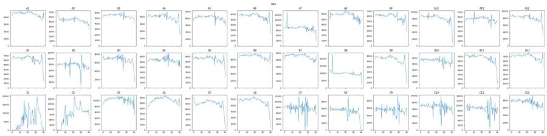
15
tool call · Read
{
"file_path": "/task/work/time_RL3-A.png"
}16
tool output
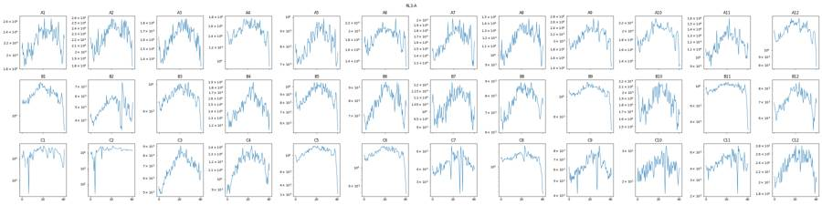
17
tool call · Read
{
"file_path": "/task/work/time_FSC-A.png"
}18
tool output
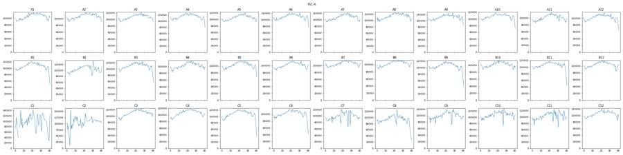
20
tool call · Bash
python3 -I - <<'EOF'
import sys; sys.path.insert(0,'/task/work')
import pickle, numpy as np, pandas as pd
data=pickle.load(open('data.pkl','rb'))
pd.set_option('display.width',300)
rows=[]
for w,df in data.items():
t=df['Time'].values
b=np.arange(0,41.25,0.25)
h,_=np.histogram(t,b)
med=np.median(h[8:120]) # 2..30 s
# fraction of bins <50% or >150% median
lowb=(h<0.5*med); hib=(h>1.5*med)
# end: time at which rate permanently falls below 50%
last=len(h)-1
k=last
while k>=0 and h[k]<0.5*med: k-=1
end_low_start=b[k+1]
n_tail=(t>=end_low_start).sum()
mid_low=[f'{b[i]:.2f}' for i in range(0,k+1) if lowb[i]]
fsc_body=np.median(df['FSC-A'][(t>5)&(t<30)]); fsc_tail=np.median(df['FSC-A'][t>=min(end_low_start,40)]) if n_tail>0 else np.nan
rows.append(dict(well=w,n=len(t),med_rate_per_s=med*4,cv_rate=np.std(h[8:150])/np.mean(h[8:150]),first_evt=t.min(),n_lowbins_mid=len(mid_low),n_hibins=hib.sum(),end_low_start=end_low_start,tail_s=round(t.max()-end_low_start,2),n_tail=n_tail,pct_tail=100*n_tail/len(t),fsc_tail_ratio=fsc_tail/fsc_body,midlow=','.join(mid_low[:12])))
print(pd.DataFrame(rows).to_string())
EOF21
tool output
well n med_rate_per_s cv_rate first_evt n_lowbins_mid n_hibins end_low_start tail_s n_tail pct_tail fsc_tail_ratio midlow 0 A1 183353 4608.0 0.055868 0.014 0 0 41.00 -0.11 0 0.000000 NaN 1 A2 221770 5506.0 0.081761 0.014 0 0 40.75 0.14 625 0.281824 0.841701 2 A3 222545 5604.0 0.080675 0.014 0 0 41.00 -0.04 0 0.000000 NaN 3 A4 160440 4082.0 0.101264 0.014 0 0 40.50 0.58 866 0.539766 0.736184 4 A5 169911 4296.0 0.072805 0.014 1 0 40.75 0.11 513 0.301923 0.918332 27.50 5 A6 230857 5904.0 0.085305 0.014 0 0 40.75 0.15 391 0.169369 0.806923 6 A7 282723 7144.0 0.151816 0.013 1 2 40.75 -0.10 0 0.000000 NaN 35.25 7 A8 236938 6040.0 0.091760 0.014 0 0 41.00 -0.05 0 0.000000 NaN 8 A9 241833 6194.0 0.129900 0.014 2 0 40.75 0.19 563 0.232805 0.773672 28.50,35.75 9 A10 335810 8604.0 0.084088 0.014 0 0 40.50 0.14 496 0.147703 0.739436 10 A11 228556 5776.0 0.128370 0.014 2 0 41.00 -0.05 0 0.000000 NaN 29.00,32.00 11 A12 330844 8512.0 0.081065 0.014 0 0 40.50 0.40 1344 0.406234 0.722529 12 B1 254845 6586.0 0.119354 0.014 1 0 39.75 1.23 2657 1.042595 0.558172 28.50 13 B2 319449 8186.0 0.207637 0.014 5 1 41.00 -0.13 0 0.000000 NaN 16.00,16.25,30.00,30.25,30.50 14 B3 275473 7064.0 0.127473 0.014 1 0 40.00 0.88 2329 0.845455 0.601664 26.00 15 B4 219859 5500.0 0.104338 0.014 1 0 41.00 -0.07 0 0.000000 NaN 39.50 16 B5 225148 5736.0 0.092191 0.014 1 0 40.50 0.49 1052 0.467248 0.695147 27.25 17 B6 369018 9250.0 0.104590 0.014 2 0 41.00 -0.13 0 0.000000 NaN 28.00,32.50 18 B7 186946 4710.0 0.065235 0.014 0 0 41.00 0.00 3 0.001605 0.982745 19 B8 412353 10136.0 0.173969 0.013 0 3 40.75 -0.10 0 0.000000 NaN 20 B9 219409 5732.0 0.094028 0.014 0 0 39.50 1.46 2370 1.080174 0.569957 21 B10 187472 4712.0 0.120482 0.013 1 0 41.00 -0.06 0 0.000000 NaN 29.50 22 B11 271438 7106.0 0.086412 0.014 0 0 39.50 1.44 2542 0.936494 0.527312 23 B12 286933 7298.0 0.070164 0.014 0 0 40.75 0.07 500 0.174257 0.975688 24 C1 250794 4548.0 0.806409 0.143 52 65 40.75 -0.03 0 0.000000 NaN 0.00,0.25,0.50,0.75,1.00,1.25,1.50,1.75,2.00,2.25,2.50,2.75 25 C2 305451 7744.0 0.534725 0.020 40 19 41.00 -0.07 0 0.000000 NaN 0.00,0.25,0.50,0.75,1.00,1.25,1.50,1.75,2.00,2.25,2.50,2.75 26 C3 418796 10624.0 0.101063 0.014 2 0 40.75 -0.01 0 0.000000 NaN 32.25,39.25 27 C4 230134 5890.0 0.069630 0.014 0 0 41.00 -0.03 0 0.000000 NaN … [1,658 more characters not shown]
23
tool call · Bash
python3 -I - <<'EOF'
import sys; sys.path.insert(0,'/task/work')
import pickle, numpy as np, pandas as pd
import matplotlib; matplotlib.use('Agg'); import matplotlib.pyplot as plt
from matplotlib.colors import LogNorm
data=pickle.load(open('data.pkl','rb'))
ws=['A1','A7','B6','C3','C4','C7','C8','C9','C10','C11','C12','C1']
fig,axs=plt.subplots(3,4,figsize=(24,18))
for ax,w in zip(axs.flat,ws):
df=data[w]
ax.hist2d(df['FSC-A'],df['SSC-A'],bins=300,range=[[0,1.05e6],[0,1.05e6]],norm=LogNorm(),cmap='jet'); ax.set_title(w)
fig.tight_layout(); fig.savefig('fsc_ssc.png',dpi=45); plt.close(fig)
fig,axs=plt.subplots(3,4,figsize=(24,18))
for ax,w in zip(axs.flat,ws):
df=data[w]
ax.hist2d(df['FSC-A'],df['SSC-A'],bins=300,range=[[0,4e5],[0,6e5]],norm=LogNorm(),cmap='jet'); ax.set_title(w)
fig.tight_layout(); fig.savefig('fsc_ssc_zoom.png',dpi=45); plt.close(fig)
# log-log
fig,axs=plt.subplots(3,4,figsize=(24,18))
for ax,w in zip(axs.flat,ws):
df=data[w]
ax.hist2d(np.log10(df['FSC-A'].clip(100)),np.log10(df['SSC-A'].clip(100)),bins=300,range=[[3,6.05],[2.5,6.05]],norm=LogNorm(),cmap='jet'); ax.set_title(w)
fig.tight_layout(); fig.savefig('fsc_ssc_log.png',dpi=45); plt.close(fig)
for w in ['A1','C7','C10']:
df=data[w]; print(w, np.percentile(df['FSC-A'],[0,1,5,25,50,75,95,99]).round(), np.percentile(df['SSC-A'],[0,1,5,25,50,75,95,99]).round())
EOF24
tool output
A1 [ 1267. 23276. 26917. 50143. 105152. 157633. 288309. 482759.] [ -20644. 11048. 18982. 45698. 127926. 262470. 648386. 1048575.] C7 [-65536. 22267. 26302. 48420. 99947. 161599. 367657. 746644.] [ -65536. 6097. 16165. 41341. 109047. 246112. 733930. 1048575.] C10 [-65536. 22527. 26813. 51494. 108304. 174126. 390806. 806608.] [ -65536. 6154. 16448. 45154. 123356. 272276. 819529. 1048575.]
25
tool call · Read
{
"file_path": "/task/work/fsc_ssc_zoom.png"
}26
tool output
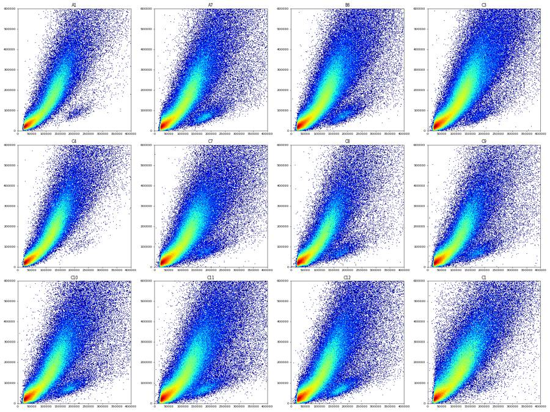
27
tool call · Read
{
"file_path": "/task/work/fsc_ssc_log.png"
}28
tool output
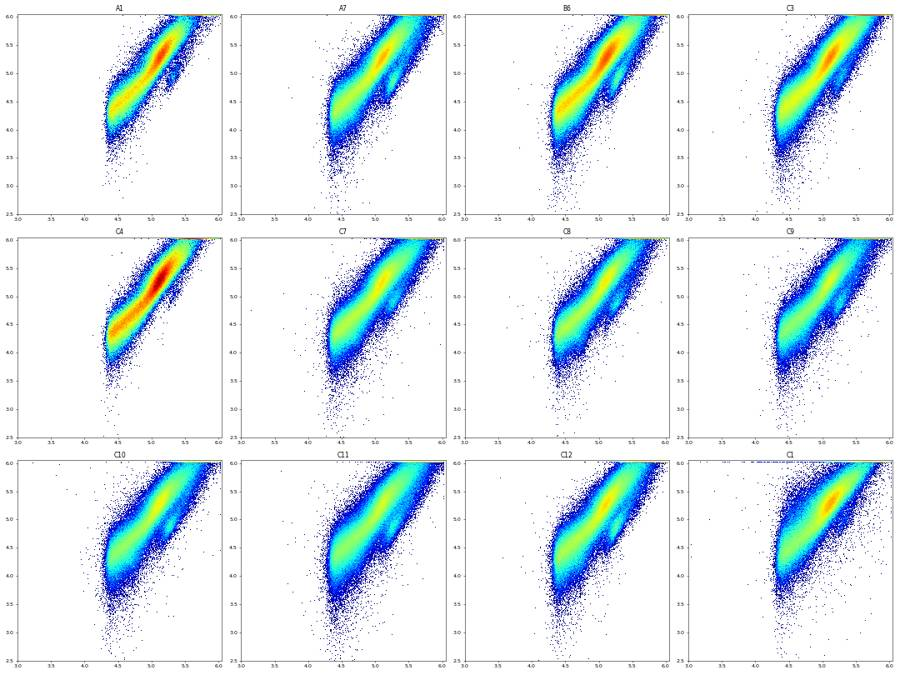
30
tool call · Bash
python3 -I - <<'EOF'
import sys; sys.path.insert(0,'/task/work')
import pickle, numpy as np, pandas as pd
import matplotlib; matplotlib.use('Agg'); import matplotlib.pyplot as plt
from matplotlib.colors import LogNorm
data=pickle.load(open('data.pkl','rb'))
def asinh(x,c=150): return np.arcsinh(x/c)
ws=['C10','C11','C12','C7','C8','C9','C4','C5','A1','A7','B6','C3']
fig,axs=plt.subplots(3,4,figsize=(24,18))
ticks=[-1e3,0,1e3,1e4,1e5,1e6]
for ax,w in zip(axs.flat,ws):
df=data[w]
ax.hist2d(asinh(df['BL1-A']),asinh(df['RL3-A']),bins=250,range=[[asinh(-2000),asinh(1.1e6)],[asinh(-2000),asinh(1.1e6)]],norm=LogNorm(),cmap='jet'); ax.set_title(w+' all events')
ax.set_xticks(asinh(np.array(ticks))); ax.set_xticklabels(['-1e3','0','1e3','1e4','1e5','1e6']); ax.set_yticks(asinh(np.array(ticks))); ax.set_yticklabels(['-1e3','0','1e3','1e4','1e5','1e6'])
ax.grid(alpha=.3)
fig.tight_layout(); fig.savefig('fl_all.png',dpi=45); plt.close(fig)
# 1D FSC-A hist
fig,axs=plt.subplots(1,2,figsize=(20,6))
for w in ['A1','B6','C7','C10','C4']:
df=data[w]
axs[0].hist(df['FSC-A'],bins=np.arange(0,4e5,2500),histtype='step',label=w,density=True)
axs[1].hist(np.log10(df['SSC-A'].clip(100)),bins=200,histtype='step',label=w,density=True)
axs[0].legend(); fig.savefig('fsc1d.png',dpi=50)
EOF31
tool output
(Bash completed with no output)
32
agent
Viewing fluorescence plots for the control wells to place the Live / Caspase boundaries.
33
tool call · Read
{
"file_path": "/task/work/fl_all.png"
}34
tool output
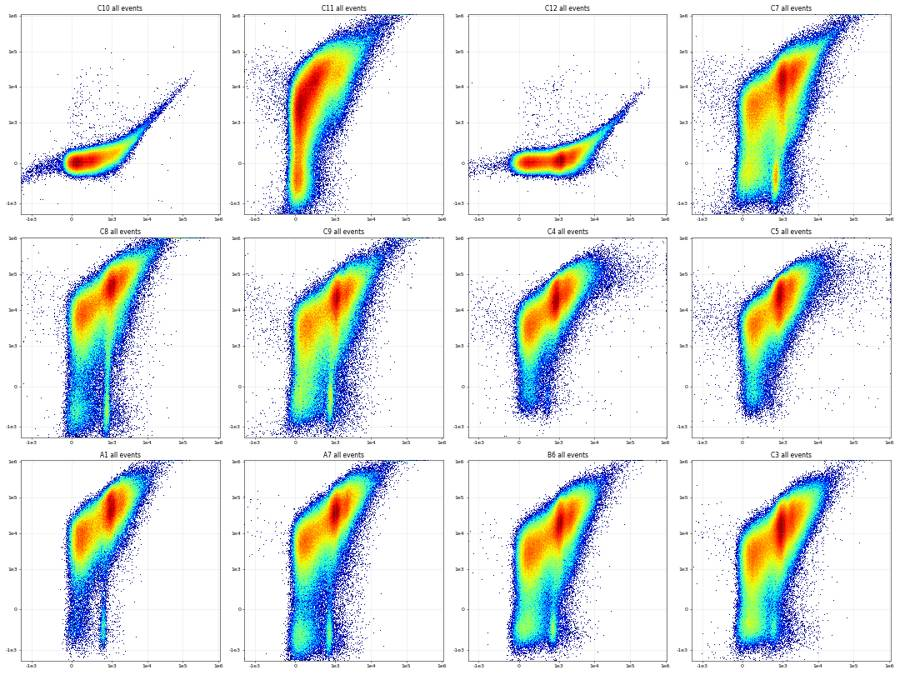
35
tool call · Read
{
"file_path": "/task/work/fsc1d.png"
}36
tool output
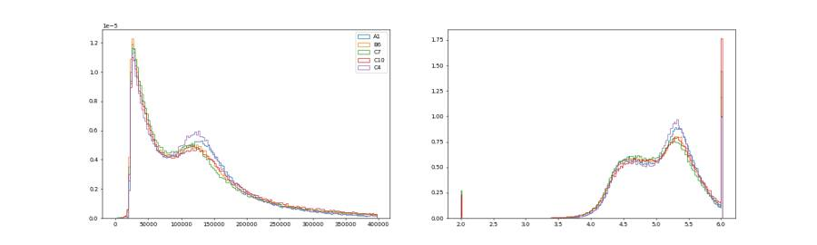
38
tool call · Bash
python3 -I - <<'EOF'
import sys; sys.path.insert(0,'/task/work')
import pickle, numpy as np, pandas as pd
import matplotlib; matplotlib.use('Agg'); import matplotlib.pyplot as plt
from matplotlib.colors import LogNorm
data=pickle.load(open('data.pkl','rb'))
def asinh(x,c=150): return np.arcsinh(x/c)
ticks=np.array([-1e3,0,1e3,1e4,1e5,1e6]); tl=['-1e3','0','1e3','1e4','1e5','1e6']
regs={'debris FSC<60k':lambda d:(d['FSC-A']<60e3),
'mid 60-90k':lambda d:(d['FSC-A']>=60e3)&(d['FSC-A']<90e3),
'main FSC 90-250k,SSC>FSC*0.8':lambda d:(d['FSC-A']>=90e3)&(d['FSC-A']<250e3)&(d['SSC-A']>0.8*d['FSC-A'])&(d['SSC-A']<1e6),
'lowSSC branch FSC 130-260k, SSC<0.55*FSC':lambda d:(d['FSC-A']>=130e3)&(d['FSC-A']<260e3)&(d['SSC-A']<0.55*d['FSC-A']),
'big FSC>250k':lambda d:(d['FSC-A']>=250e3)}
for w in ['C7','C11','C12','A1']:
df=data[w]
fig,axs=plt.subplots(1,5,figsize=(30,6))
for ax,(k,f) in zip(axs,regs.items()):
d=df[f(df)]
ax.hist2d(asinh(d['BL1-A']),asinh(d['RL3-A']),bins=200,range=[[asinh(-2000),asinh(1.1e6)],[asinh(-2000),asinh(1.1e6)]],norm=LogNorm(),cmap='jet'); ax.set_title(f'{w} {k} n={len(d)}')
ax.set_xticks(asinh(ticks)); ax.set_xticklabels(tl); ax.set_yticks(asinh(ticks)); ax.set_yticklabels(tl); ax.grid(alpha=.3)
fig.tight_layout(); fig.savefig(f'fl_regions_{w}.png',dpi=45); plt.close(fig)
EOF39
tool output
(Bash completed with no output)
40
tool call · Read
{
"file_path": "/task/work/fl_regions_C7.png"
}41
tool output
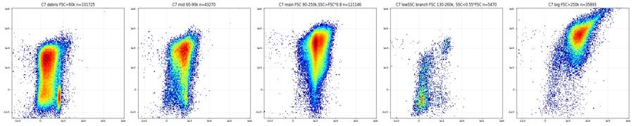
42
tool call · Read
{
"file_path": "/task/work/fl_regions_C11.png"
}43
tool output
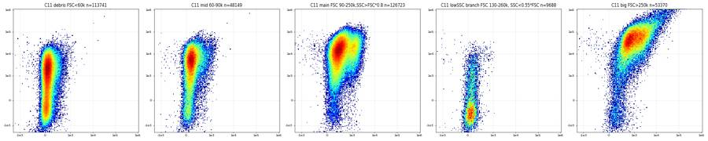
44
tool call · Read
{
"file_path": "/task/work/fl_regions_C12.png"
}45
tool output
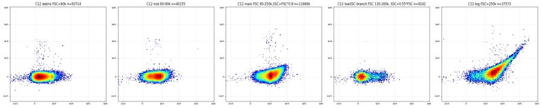
47
tool call · Bash
python3 -I - <<'EOF'
import sys; sys.path.insert(0,'/task/work')
import pickle, numpy as np, pandas as pd
import matplotlib; matplotlib.use('Agg'); import matplotlib.pyplot as plt
from matplotlib.colors import LogNorm
data=pickle.load(open('data.pkl','rb'))
ws=['A1','B6','C4','C7','C10','C11']
fig,axs=plt.subplots(2,6,figsize=(36,12))
for j,w in enumerate(ws):
df=data[w]; d=df[(df['FSC-A']>80e3)]
axs[0,j].hist2d(d['SSC-H'],d['SSC-A'],bins=300,range=[[0,1.05e6],[0,1.05e6]],norm=LogNorm(),cmap='jet'); axs[0,j].set_title(w+' FSC-A>80k')
axs[0,j].plot([0,1e6],[0,1e6],'k-',lw=.5)
r=d['SSC-A']/d['SSC-H'].clip(1)
axs[1,j].hist2d(d['SSC-H'],r,bins=300,range=[[0,1.05e6],[0.8,2.5]],norm=LogNorm(),cmap='jet'); axs[1,j].set_title('ratio A/H')
print(w, np.percentile(r,[1,5,25,50,75,90,95,99]).round(3), 'satA',(d['SSC-A']>=1048575).mean().round(4),'satH',(d['SSC-H']>=1048575).mean().round(4))
fig.tight_layout(); fig.savefig('singlets.png',dpi=40); plt.close(fig)
EOF48
tool call · Read
{
"file_path": "/task/work/singlets.png"
}49
tool output
A1 [1.001 1.044 1.114 1.193 1.356 1.661 1.916 2.436] satA 0.03 satH 0.0032 B6 [0.964 1.012 1.092 1.187 1.422 1.824 2.097 2.701] satA 0.0362 satH 0.004 C4 [0.991 1.026 1.092 1.167 1.338 1.663 1.917 2.432] satA 0.0288 satH 0.0023 C7 [0.914 1.002 1.09 1.201 1.493 1.933 2.23 2.937] satA 0.0452 satH 0.0065 C10 [0.914 1.001 1.091 1.193 1.456 1.877 2.171 2.844] satA 0.0529 satH 0.0094 C11 [0.863 1. 1.096 1.231 1.541 1.979 2.278 2.975] satA 0.0726 satH 0.0142
50
tool output
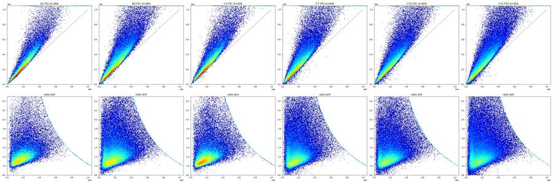
52
tool call · Bash
python3 -I - <<'EOF'
import sys; sys.path.insert(0,'/task/work')
import pickle, numpy as np, pandas as pd
import matplotlib; matplotlib.use('Agg'); import matplotlib.pyplot as plt
from matplotlib.colors import LogNorm
data=pickle.load(open('data.pkl','rb'))
def asinh(x,c=150): return np.arcsinh(x/c)
ticks=np.array([-1e3,0,1e3,1e4,1e5,1e6]); tl=['-1e3','0','1e3','1e4','1e5','1e6']
def pre(df):
r=df['SSC-A']/df['SSC-H'].clip(1)
return df[(df['FSC-A']>80e3)&(df['FSC-A']<1.0e6)&(df['SSC-A']<1.0e6)&(r<1.4)&(r>0.9)]
# ratio hist
fig,ax=plt.subplots(figsize=(10,5))
for w in ['A1','B6','C7','C10','C11','C4']:
df=data[w]; d=df[(df['FSC-A']>80e3)&(df['SSC-A']<1.0e6)]
ax.hist(d['SSC-A']/d['SSC-H'].clip(1),bins=np.arange(0.8,2.5,0.01),histtype='step',label=w,density=True)
ax.legend(); ax.set_yscale('log'); fig.savefig('ratio1d.png',dpi=60)
wells=list(data)
fig,axs=plt.subplots(3,12,figsize=(60,15))
for w in wells:
d=pre(data[w]); ax=axs['ABC'.index(w[0]),int(w[1:])-1]
ax.hist2d(asinh(d['BL1-A']),asinh(d['RL3-A']),bins=200,range=[[asinh(-2000),asinh(1.1e6)],[asinh(-2000),asinh(1.1e6)]],norm=LogNorm(),cmap='jet'); ax.set_title(f'{w} n={len(d)}')
ax.set_xticks(asinh(ticks)); ax.set_xticklabels(tl); ax.set_yticks(asinh(ticks)); ax.set_yticklabels(tl); ax.grid(alpha=.3)
fig.tight_layout(); fig.savefig('fl_single_all.png',dpi=40); plt.close(fig)
fig,axs=plt.subplots(2,1,figsize=(14,12))
b=np.linspace(asinh(-2000),asinh(1.1e6),200)
for w in ['C10','C11','C12','C7','C8','C9','A1','B6','C4']:
d=pre(data[w])
axs[0].hist(asinh(d['RL3-A']),bins=b,histtype='step',label=w,density=True)
axs[1].hist(asinh(d['BL1-A']),bins=b,histtype='step',label=w,density=True)
for ax in axs: ax.set_xticks(asinh(ticks)); ax.set_xticklabels(tl); ax.legend(); ax.grid(alpha=.3)
axs[0].set_title('RL3-A'); axs[1].set_title('BL1-A')
fig.savefig('fl1d.png',dpi=60)
EOF53
tool call · Read
{
"file_path": "/task/work/fl1d.png"
}54
tool call · Read
{
"file_path": "/task/work/ratio1d.png"
}55
tool output
(Bash completed with no output)
56
tool output
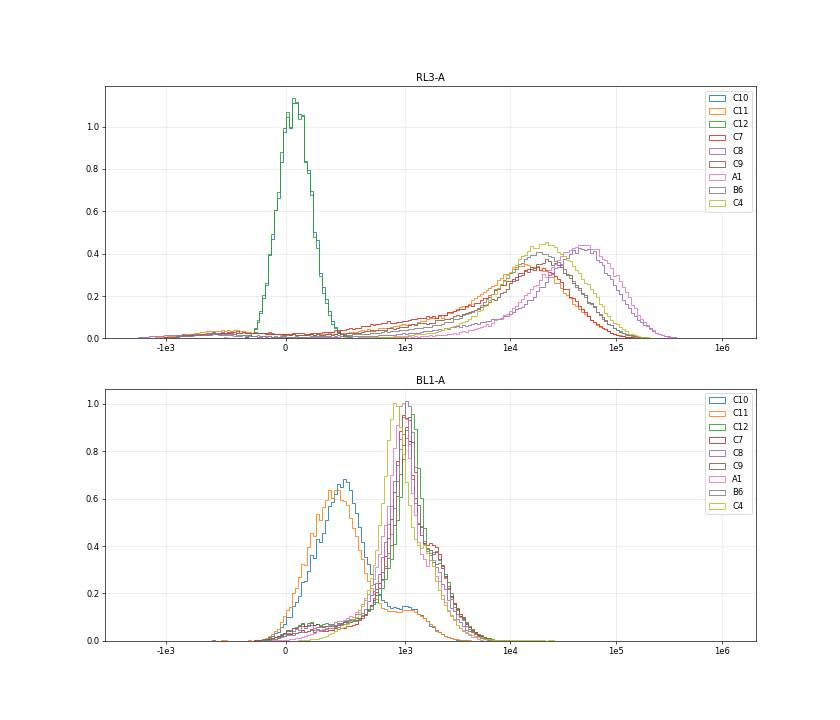
57
tool output
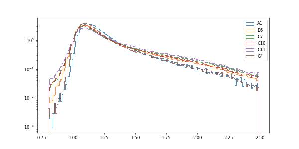
59
agent
Looking at the single-cell fluorescence plots across all 36 wells to place the Live/Caspase/Late-apoptosis boundaries.
60
tool call · Read
{
"file_path": "/task/work/fl_single_all.png"
}61
tool output
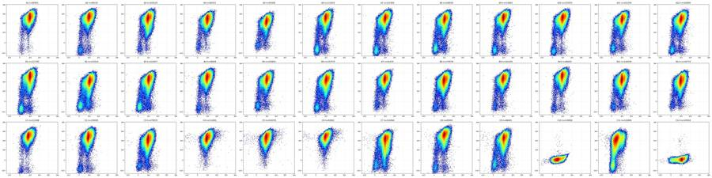
63
tool call · Bash
python3 -I - <<'EOF'
import sys; sys.path.insert(0,'/task/work')
import pickle, numpy as np, pandas as pd
import matplotlib; matplotlib.use('Agg'); import matplotlib.pyplot as plt
from matplotlib.colors import LogNorm
data=pickle.load(open('data.pkl','rb'))
fig,axs=plt.subplots(3,5,figsize=(30,18))
for i,w in enumerate(['C7','C11','A7']):
df=data[w]
sel={'RL3<600 & BL1<450':(df['RL3-A']<600)&(df['BL1-A']<450),
'RL3<600 & BL1 450-1500':(df['RL3-A']<600)&(df['BL1-A']>=450)&(df['BL1-A']<1500),
'RL3<600 & BL1>1500':(df['RL3-A']<600)&(df['BL1-A']>=1500),
'RL3 600-5000':(df['RL3-A']>=600)&(df['RL3-A']<5000),
'RL3>5000':(df['RL3-A']>=5000)}
for j,(k,m) in enumerate(sel.items()):
d=df[m]
axs[i,j].hist2d(d['FSC-A'],d['SSC-A'],bins=200,range=[[0,5e5],[0,6e5]],norm=LogNorm(),cmap='jet'); axs[i,j].set_title(f'{w} {k} n={len(d)}')
fig.tight_layout(); fig.savefig('scatter_by_fl.png',dpi=42); plt.close(fig)
EOF64
tool call · Read
{
"file_path": "/task/work/scatter_by_fl.png"
}65
tool output
(Bash completed with no output)
66
tool output
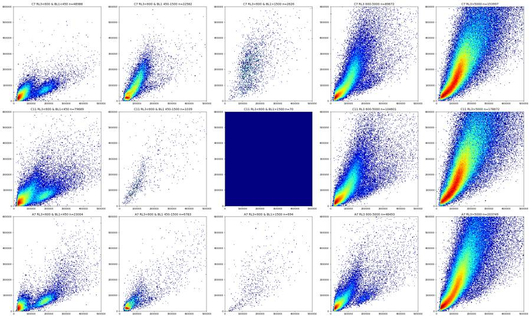
68
tool call · Bash
python3 -I - <<'EOF'
import sys; sys.path.insert(0,'/task/work')
import pickle, numpy as np, pandas as pd
data=pickle.load(open('data.pkl','rb'))
df=pd.concat([data[w] for w in ['A1','A7','B6','C3','C7','C8','C9','C10','C11','C12','C4']])
d=df[(df['FSC-A']>85e3)&(df['SSC-A']<1.0e6)&(df['FSC-A']<1e6)]
r=(d['SSC-A']/d['SSC-H'].clip(1)).values; H=d['SSC-H'].values
edges=[0,2e4,4e4,6e4,8e4,1e5,1.5e5,2e5,2.5e5,3e5,4e5,5e5,6e5,7.5e5]
for lo,hi in zip(edges[:-1],edges[1:]):
m=(H>=lo)&(H<hi); x=r[m]
h,b=np.histogram(x,bins=np.arange(0.7,2.6,0.02));
hs=np.convolve(h,np.ones(3)/3,'same'); k=hs.argmax(); mode=b[k]+0.01
def cross(frac,side):
j=k
while 0<j<len(hs)-1 and hs[j]>frac*hs[k]: j+=side
return b[j]+0.01
print(f'H {lo:8.0f}-{hi:8.0f} n={m.sum():7d} mode={mode:.2f} up50={cross(.5,1):.2f} up25={cross(.25,1):.2f} up10={cross(.1,1):.2f} lo25={cross(.25,-1):.2f} lo10={cross(.1,-1):.2f} lo2={cross(.02,-1):.2f} frac<1.35={np.mean(x<1.35):.3f} <1.5={np.mean(x<1.5):.3f}')
EOF69
tool output
H 0- 20000 n= 1995 mode=1.05 up50=1.33 up25=1.93 up10=2.25 lo25=0.71 lo10=0.71 lo2=0.71 frac<1.35=0.711 <1.5=0.762 H 20000- 40000 n= 17355 mode=1.05 up50=1.23 up25=1.59 up10=2.15 lo25=0.87 lo10=0.77 lo2=0.71 frac<1.35=0.615 <1.5=0.702 H 40000- 60000 n= 59136 mode=1.09 up50=1.27 up25=1.47 up10=1.97 lo25=0.93 lo10=0.89 lo2=0.73 frac<1.35=0.665 <1.5=0.759 H 60000- 80000 n= 100086 mode=1.05 up50=1.25 up25=1.39 up10=1.71 lo25=0.95 lo10=0.91 lo2=0.83 frac<1.35=0.712 <1.5=0.803 H 80000- 100000 n= 122031 mode=1.05 up50=1.13 up25=1.23 up10=1.45 lo25=0.97 lo10=0.93 lo2=0.87 frac<1.35=0.778 <1.5=0.847 H 100000- 150000 n= 362306 mode=1.07 up50=1.15 up25=1.21 up10=1.35 lo25=0.99 lo10=0.95 lo2=0.91 frac<1.35=0.817 <1.5=0.873 H 150000- 200000 n= 352354 mode=1.11 up50=1.19 up25=1.25 up10=1.41 lo25=1.01 lo10=0.99 lo2=0.95 frac<1.35=0.787 <1.5=0.852 H 200000- 250000 n= 260401 mode=1.13 up50=1.23 up25=1.31 up10=1.51 lo25=1.03 lo10=1.01 lo2=0.97 frac<1.35=0.715 <1.5=0.799 H 250000- 300000 n= 172967 mode=1.17 up50=1.29 up25=1.41 up10=1.73 lo25=1.05 lo10=1.03 lo2=0.99 frac<1.35=0.623 <1.5=0.734 H 300000- 400000 n= 186224 mode=1.21 up50=1.39 up25=1.61 up10=2.07 lo25=1.07 lo10=1.05 lo2=1.01 frac<1.35=0.495 <1.5=0.652 H 400000- 500000 n= 78969 mode=1.29 up50=1.59 up25=1.93 up10=2.17 lo25=1.11 lo10=1.07 lo2=1.03 frac<1.35=0.351 <1.5=0.570 H 500000- 600000 n= 29948 mode=1.37 up50=1.73 up25=1.85 up10=1.93 lo25=1.15 lo10=1.11 lo2=1.05 frac<1.35=0.277 <1.5=0.563 H 600000- 750000 n= 8796 mode=1.39 up50=1.57 up25=1.63 up10=1.65 lo25=1.17 lo10=1.13 lo2=1.07 frac<1.35=0.365 <1.5=0.805
71
tool call · Bash
cat > gates_np.py <<'EOF'
import numpy as np
from matplotlib.path import Path
CELLS=[(85e3,8e3),(85e3,3.3e5),(2.0e5,1.03e6),(1.03e6,1.03e6),(1.03e6,2.5e5),(4.0e5,5.0e4),(1.5e5,8e3)]
SING=[(-1e3,-1.0e4),(-1e3,1.0e4),(7.8e5,1.04e6),(1.05e6,1.04e6),(1.05e6,9.0e5)]
def cells(df): return Path(CELLS).contains_points(df[['FSC-A','SSC-A']].values)
def sing(df): return cells(df)&Path(SING).contains_points(df[['SSC-H','SSC-A']].values)
EOF
python3 -I - <<'EOF'
import sys; sys.path.insert(0,'/task/work')
import pickle, numpy as np, pandas as pd
from gates_np import *
import matplotlib; matplotlib.use('Agg'); import matplotlib.pyplot as plt
data=pickle.load(open('data.pkl','rb'))
def asinh(x,c=150): return np.arcsinh(x/c)
ticks=np.array([-1e3,-300,0,300,1e3,3e3,1e4,1e5,1e6]); tl=['-1e3','-300','0','300','1e3','3e3','1e4','1e5','1e6']
print('global min BL1',min(d['BL1-A'].min() for d in data.values()),'RL3',min(d['RL3-A'].min() for d in data.values()))
for w,df in data.items():
c=cells(df); s=sing(df)
print(w, len(df), c.sum(), round(100*c.mean(),1), s.sum(), round(100*s.sum()/c.sum(),1))
fig,axs=plt.subplots(3,1,figsize=(16,18))
b=np.linspace(asinh(-3000),asinh(1.1e6),300)
for w in ['C10','C11','C12','C7','C8','C9']:
d=data[w][sing(data[w])]
axs[0].hist(asinh(d['RL3-A']),bins=b,histtype='step',label=w)
axs[1].hist(asinh(d['BL1-A']),bins=b,histtype='step',label=w)
dl=d[d['RL3-A']<700]
axs[2].hist(asinh(dl['BL1-A']),bins=b,histtype='step',label=w+' RL3<700')
for ax in axs: ax.set_xticks(asinh(ticks)); ax.set_xticklabels(tl); ax.legend(); ax.grid(alpha=.3); ax.set_yscale('log')
axs[0].set_title('RL3-A singles'); axs[1].set_title('BL1-A singles'); axs[2].set_title('BL1-A, RL3<700 singles')
fig.savefig('fl1d_s.png',dpi=60)
EOF72
tool call · Read
{
"file_path": "/task/work/fl1d_s.png"
}73
tool output
global min BL1 -65536.0 RL3 -65536.0 A1 183353 103845 56.6 79977 77.0 A2 221770 125151 56.4 91801 73.4 A3 222545 131070 58.9 102369 78.1 A4 160440 97406 60.7 75163 77.2 A5 169911 97503 57.4 75554 77.5 A6 230857 137167 59.4 106584 77.7 A7 282723 159424 56.4 114755 72.0 A8 236938 137966 58.2 101339 73.5 A9 241833 142953 59.1 107346 75.1 A10 335810 193067 57.5 142679 73.9 A11 228556 124090 54.3 94264 76.0 A12 330844 182506 55.2 134570 73.7 B1 254845 142160 55.8 105118 73.9 B2 319449 175486 54.9 125456 71.5 B3 275473 158058 57.4 115180 72.9 B4 219859 120743 54.9 92674 76.8 B5 225148 123242 54.7 93879 76.2 B6 369018 202771 54.9 147806 72.9 B7 186946 107513 57.5 86501 80.5 B8 412353 231561 56.2 168238 72.7 B9 219409 124614 56.8 96170 77.2 B10 187472 103891 55.4 82634 79.5 B11 271438 156564 57.7 120094 76.7 B12 286933 163752 57.1 125784 76.8 C1 250794 146789 58.5 103915 70.8 C2 305451 180917 59.2 129684 71.7 C3 418796 239547 57.2 168893 70.5 C4 230134 133475 58.0 104346 78.2 C5 206789 121529 58.8 95327 78.4 C6 189779 107890 56.9 86181 79.9 C7 317865 170369 53.6 118298 69.4 C8 214991 109934 51.1 80797 73.5 C9 222410 117394 52.8 83579 71.2 C10 276619 154969 56.0 110211 71.1 C11 364071 192265 52.8 126644 65.9 C12 307442 168608 54.8 118432 70.2
74
tool output
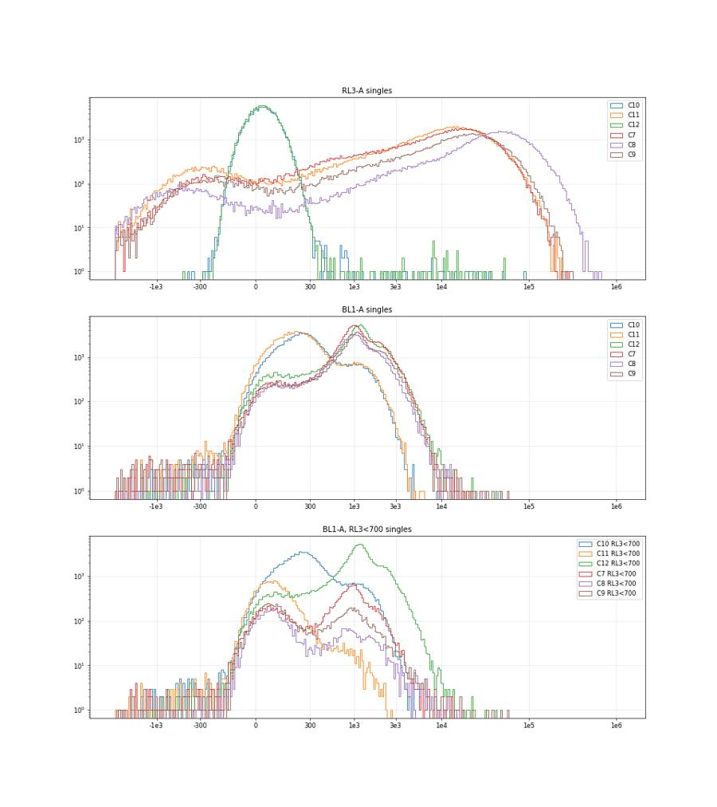
76
agent
Scatter gates are roughed in; now pinning down the RL3-A and BL1-A thresholds from the single-stain controls.
77
tool call · Bash
python3 -I - <<'EOF'
import sys; sys.path.insert(0,'/task/work')
import pickle, numpy as np, pandas as pd
from gates_np import *
data=pickle.load(open('data.pkl','rb'))
S={w:data[w][sing(data[w])] for w in data}
def pct(x,qs): return np.percentile(x,qs).round(0)
print('C10 RL3 pct [0.1,1,50,99,99.5,99.9]',pct(S['C10']['RL3-A'],[0.1,1,50,99,99.5,99.9]))
print('C12 RL3 pct',pct(S['C12']['RL3-A'],[0.1,1,50,99,99.5,99.9]))
print('C10 BL1 pct [1,50,90,95,99,99.9]',pct(S['C10']['BL1-A'],[1,50,80,90,95,99,99.9]))
print('C11 BL1 pct',pct(S['C11']['BL1-A'],[1,50,80,90,95,99,99.9]))
print('C11 live(RL3<500) BL1 pct',pct(S['C11'][S['C11']['RL3-A']<500]['BL1-A'],[1,50,80,90,95,99,99.9]))
# valley finding in asinh space
def valley(x,lo,hi,c=150,nb=60):
a=np.arcsinh(x/c); b=np.linspace(np.arcsinh(lo/c),np.arcsinh(hi/c),nb)
h,_=np.histogram(a,b); hs=np.convolve(h,np.ones(5)/5,'same')
k=hs[3:-3].argmin()+3
return round(float(np.sinh((b[k]+b[k+1])/2)*c))
print('RL3 valley between neg and bright (search -300..3000):')
for w in ['C11','C7','C8','C9','A1','A7','B6','C3','B2']:
print(' ',w, valley(S[w]['RL3-A'].values,-300,3000))
print('BL1 valley (search 150..900): C12 all singles', valley(S['C12']['BL1-A'].values,150,900))
for w in ['C7','C8','C9','A1','A7','B6','C3','B2','A10','B8']:
d=S[w]; l=d[d['RL3-A']<500]
print(' ',w,'live n',len(l),'BL1 valley',valley(l['BL1-A'].values,150,900))
# sensitivity
print('\nSensitivity: Live count vs RL3 upper; Casp+ of live vs BL1 thr; Late vs RL3 lower')
for w in ['C10','C11','C12','C7','C8','C9','A1','A7','B6','C4']:
d=S[w]; n=len(d)
live={t:(d['RL3-A']<t).sum() for t in [200,300,400,500,700,1000,2000]}
l=d[d['RL3-A']<500]
cp={t:round(100*(l['BL1-A']>t).mean(),1) for t in [350,450,500,550,650,800]}
late={(t,b):round(100*((d['RL3-A']>t)&(d['BL1-A']>b)).mean(),1) for t in [500,1000,2000,5000] for b in [500]}
print(w,n,'live',live,'\n casp%live',cp,'late%single',late)
EOF78
tool output
C10 RL3 pct [0.1,1,50,99,99.5,99.9] [-135. -92. 30. 183. 207. 277.]
C12 RL3 pct [-136. -95. 28. 177. 202. 280.]
C10 BL1 pct [1,50,90,95,99,99.9] [ -19. 245. 469. 861. 1238. 1924. 2849.]
C11 BL1 pct [ -30. 210. 419. 816. 1226. 1916. 2877.]
C11 live(RL3<500) BL1 pct [ -89. 65. 134. 188. 260. 830. 1799.]
RL3 valley between neg and bright (search -300..3000):
C11 81
C7 -27
C8 112
C9 81
A1 38
A7 81
B6 38
C3 25
B2 112
BL1 valley (search 150..900): C12 all singles 171
C7 live n 14991 BL1 valley 233
C8 live n 5313 BL1 valley 281
C9 live n 9316 BL1 valley 348
A1 live n 1021 BL1 valley 369
A7 live n 8291 BL1 valley 369
B6 live n 9828 BL1 valley 358
C3 live n 9094 BL1 valley 308
B2 live n 15673 BL1 valley 337
A10 live n 5493 BL1 valley 403
B8 live n 6495 BL1 valley 256
Sensitivity: Live count vs RL3 upper; Casp+ of live vs BL1 thr; Late vs RL3 lower
C10 110211 live {200: 109528, 300: 110125, 400: 110162, 500: 110171, 700: 110176, 1000: 110186, 2000: 110188}
casp%live {350: 30.2, 450: 21.1, 500: 18.5, 550: 16.5, 650: 13.8, 800: 11.0} late%single {(500, 500): 0.0, (1000, 500): 0.0, (2000, 500): 0.0, (5000, 500): 0.0}
C11 126644 live {200: 13221, 300: 14395, 400: 15509, 500: 16535, 700: 18448, 1000: 21071, 2000: 28081}
casp%live {350: 3.3, 450: 2.5, 500: 2.2, 550: 2.0, 650: 1.5, 800: 1.1} late%single {(500, 500): 16.0, (1000, 500): 15.7, (2000, 500): 15.1, (5000, 500): 13.3}
C12 118432 live {200: 117792, 300: 118335, 400: 118363, 500: 118372, 700: 118377, 1000: 118382, 2000: 118387}
casp%live {350: 87.5, 450: 85.0, 500: 83.7, 550: 82.3, 650: 79.1, 800: 72.7} late%single {(500, 500): 0.0, (1000, 500): 0.0, (2000, 500): 0.0, (5000, 500): 0.0}
C7 118298 live {200: 10179, 300: 11840, 400: 13442, 500: 14991, 700: 17776, 1000: 20989, 2000: 28713}
casp%live {350: 65.6, 450: 62.7, 500: 60.8, 550: 58.7, 650: 53.5, 800: 43.6} late%single {(500, 500): 80.4, (1000, 500): 76.1, (2000, 500): 70.4, (5000, 500): 59.5}
C8 80797 live {200: 4618, 300: 4888, 400: 5110, 500: 5313, 700: 5711, 1000: 6262, 2000: 7989}
casp%live {350: 30.5, 450: 28.2, 500: 27.1, 550: 26.1, 650: 24.0, 800: 19.7} late%single {(500, 500): 82.6, (1000, 500): 81.9, (2000, 500): 80.5, (5000, 500): 76.5}
C9 83579 live {200: 7393, 300: 8080, 400: 8664, 500: 9316, 700: 10388, 1000: 11891, 2000: 15855}
casp%live {350: 40.2, 450: 37.5, 500: 36.0, 550: 34.7, 650: 31.3, 800: 25.9} late%single {(500, 500): 80.2, (1000, 500): 78.0, (2000, 500): 74.2, (5000, 500): 65.9}
A1 79977 live {200: 802, 300: 875, 400: 951, 500: 1021, 700: 1163, 1000: 1363, 2000: 1973}
casp%live {350: 30.1, 450: 27.2, 500: 25.3, 550: 22.8, 650: 16.4, 800: 9.1} late%single {(500, 500): 86.2, (1000, 500): 86.0, (2000, 500): 85.6, (5000, 500): 83.9}
A7 114755 live {200: 7432, 300: 7745, 400: 8031, 500: 8291, 700: 8761, 1000: 9366, 2000: 11191}
casp%live {350: 18.9, 450: 16.9, 500: 16.1, 550: 15.2, 650: 13.0, 800: 9.7} late%single {(500, 500): 81.6, (1000, 500): 81.2, (2000, 500): 80.3, (5000, 500): 77.8}
B6 147806 live {200: 7534, 300: 8305, 400: 9090, 500: 9828, 700: 11189, 1000: 13076, 2000: 18119}
casp%live {350: 41.6, 450: 38.8, 500: 37.4, 550: 35.7, 650: 32.0, 800: 25.7} late%single {(500, 500): 85.3, (1000, 500): 83.7, (2000, 500): 81.0, (5000, 500): 73.8}
C4 104346 live {200: 521, 300: 641, 400: 759, 500: 909, 700: 1161, 1000: 1537, 2000: 2914}
casp%live {350: 81.2, 450: 68.6, 500: 62.7, 550: 54.7, 650: 40.0, 800: 24.0} late%single {(500, 500): 89.5, (1000, 500): 89.1, (2000, 500): 88.1, (5000, 500): 83.5}80
tool call · Bash
python3 -I - <<'EOF'
import sys; sys.path.insert(0,'/task/work')
import pickle, numpy as np, pandas as pd
from gates_np import *
import matplotlib; matplotlib.use('Agg'); import matplotlib.pyplot as plt
from matplotlib.colors import LogNorm
data=pickle.load(open('data.pkl','rb'))
def asinh(x,c=150): return np.arcsinh(x/c)
ticks=np.array([-300,0,300,1e3,3e3,1e4,1e5]); tl=['-300','0','300','1e3','3e3','1e4','1e5']
ws=['C10','C11','C12','C7','C8','C9','A7','B2']
fig,axs=plt.subplots(2,8,figsize=(56,14))
for j,w in enumerate(ws):
d=data[w][sing(data[w])]
ax=axs[0,j]
ax.hist2d(asinh(d['BL1-A']),d['RL3-A'],bins=[200,220],range=[[asinh(-500),asinh(3e4)],[-2500,3000]],norm=LogNorm(),cmap='jet'); ax.set_title(w+' linear RL3')
ax.set_xticks(asinh(ticks)); ax.set_xticklabels(tl); ax.grid(alpha=.4); ax.axhline(350,color='k'); ax.axvline(asinh(450),color='k')
ax=axs[1,j]
ax.hist(d['RL3-A'],bins=np.arange(-2500,6000,50)); ax.set_yscale('log'); ax.axvline(350,color='k'); ax.grid(alpha=.4)
fig.tight_layout(); fig.savefig('live_zoom.png',dpi=38); plt.close(fig)
EOF81
tool call · Read
{
"file_path": "/task/work/live_zoom.png"
}82
tool output
(Bash completed with no output)
83
tool output
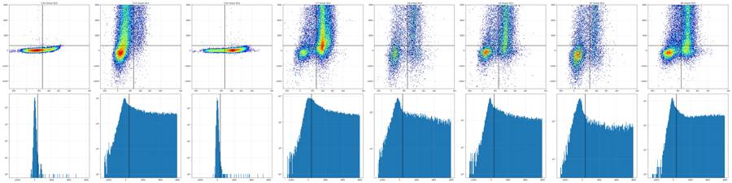
85
tool call · Bash
mkdir -p /task/outputs && cd /task/work && cat > build.py <<'EOF'
import sys; sys.path.insert(0,'/task/work')
import flowkit as fk, numpy as np, pandas as pd, warnings
from flowkit import Dimension
from flowkit.gates import RectangleGate, PolygonGate
warnings.filterwarnings('ignore')
U='uncompensated'
CELLS=[(85e3,8e3),(85e3,3.3e5),(2.0e5,1.03e6),(1.03e6,1.03e6),(1.03e6,2.5e5),(4.0e5,5.0e4),(1.5e5,8e3)]
SING=[(-1e3,-1.0e4),(-1e3,1.0e4),(7.8e5,1.04e6),(1.05e6,1.04e6),(1.05e6,9.0e5)]
LO=-7.0e4; HI=1.2e6
RL3_LIVE_MAX=1000.; BL1_POS_MIN=500.; RL3_BRIGHT_MIN=3000.
LATE=[(BL1_POS_MIN,RL3_BRIGHT_MIN),(BL1_POS_MIN,HI),(HI,HI),(HI,RL3_BRIGHT_MIN)]
def build():
gs=fk.GatingStrategy()
d=lambda ch,**k: Dimension(ch,compensation_ref=U,**k)
gs.add_gate(PolygonGate('Cells',[d('FSC-A'),d('SSC-A')],CELLS),gate_path=('root',))
gs.add_gate(PolygonGate('Single_Cells',[d('SSC-H'),d('SSC-A')],SING),gate_path=('root','Cells'))
gs.add_gate(RectangleGate('Live',[d('BL1-A',range_min=LO,range_max=HI),d('RL3-A',range_min=LO,range_max=RL3_LIVE_MAX)]),gate_path=('root','Cells','Single_Cells'))
gs.add_gate(RectangleGate('Caspase_pos',[d('BL1-A',range_min=BL1_POS_MIN,range_max=HI),d('RL3-A',range_min=LO,range_max=RL3_LIVE_MAX)]),gate_path=('root','Cells','Single_Cells','Live'))
gs.add_gate(PolygonGate('Late_apoptosis',[d('BL1-A'),d('RL3-A')],LATE),gate_path=('root','Cells','Single_Cells'))
return gs
POPS=[('Cells','All_events'),('Single_Cells','Cells'),('Live','Single_Cells'),('Caspase_pos','Live'),('Late_apoptosis','Single_Cells')]
if __name__=='__main__':
gs=build()
with open('/task/outputs/gates.xml','wb') as f: fk.export_gatingml(gs,f)
gs2=fk.parse_gating_xml('/task/outputs/gates.xml')
print(gs2.get_gate_ids())
layout=pd.read_csv('/task/inputs/plate_layout.csv')
rows=[]
for _,r in layout.iterrows():
s=fk.Sample('/task/inputs/raw/'+r.file, ignore_offset_error=True)
res=gs2.gate_sample(s)
n={'All_events':s.event_count}
for p,par in POPS:
n[p]=int(res.get_gate_membership(p).sum())
# cross-check against report counts
rep=res.report.set_index('gate_name')['count']
for p,par in POPS:
assert int(rep[p])==n[p],(p,rep[p],n[p])
rows.append(dict(file=r.file,well=r.well,population=p,count=n[p],parent_population=par,pct_of_parent=round(100*n[p]/n[par],4) if n[par]>0 else 0.0))
out=pd.DataFrame(rows); out.to_csv('/task/outputs/counts.csv',index=False)
piv=out.pivot(index='well',columns='population',values='pct_of_parent').loc[layout.well,[p for p,_ in POPS]]
cnt=out.pivot(index='well',columns='population',values='count').loc[layout.well,[p for p,_ in POPS]]
pd.set_option('display.width',250)
print(pd.concat([cnt,piv.round(2).add_suffix('_%')],axis=1).to_string())
EOF
python3 -I build.py86
tool output (error)
Exit code 1
Traceback (most recent call last):
File "/task/work/build.py", line 4, in <module>
from flowkit.gates import RectangleGate, PolygonGate
ModuleNotFoundError: No module named 'flowkit.gates'88
agent
Fixing an import hiccup in the gate-building script, then saving the first `gates.xml`.
89
tool call · Bash
python3 -I -c "
import flowkit as fk; print(fk.__version__, fk.__file__); print([x for x in dir(fk) if not x.startswith('_')]); print(dir(fk.gates))"90
tool output
1.2.3 /usr/local/lib/python3.12/site-packages/flowkit/__init__.py ['Dimension', 'GatingStrategy', 'Matrix', 'QuadrantDivider', 'RatioDimension', 'Sample', 'Session', 'Workspace', 'exceptions', 'export_gatingml', 'extract_wsp_sample_data', 'gates', 'generate_transforms', 'load_samples', 'parse_gating_xml', 'parse_wsp', 'read_multi_dataset_fcs', 'transforms'] ['BooleanGate', 'EllipsoidGate', 'PolygonGate', 'Quadrant', 'QuadrantGate', 'RectangleGate', '__all__', '__builtins__', '__cached__', '__doc__', '__file__', '__loader__', '__name__', '__package__', '__path__', '__spec__', '_base_gate', '_gates', '_gml_gates', '_wsp_gates']
92
tool call · Bash
ls; python3 -I -c "
import sys; sys.path.insert(0,'/task/work')
import flowkit as fk
from flowkit.gates import RectangleGate, PolygonGate
print('ok')"93
tool output (error)
Exit code 1 __pycache__ build.py data.pkl fl1d.png fl1d_s.png fl_all.png fl_regions_A1.png fl_regions_C11.png fl_regions_C12.png fl_regions_C7.png fl_single_all.png fsc1d.png fsc_ssc.png fsc_ssc_log.png fsc_ssc_zoom.png gates_np.py live_zoom.png load.py ratio1d.png scatter_by_fl.png singlets.png summary.csv time_BL1-A.png time_FSC-A.png time_RL3-A.png time_SSC-A.png time_rate.png Traceback (most recent call last): File "<string>", line 4, in <module> ModuleNotFoundError: No module named 'flowkit.gates'
95
tool call · Bash
sed -i 's/^from flowkit.gates import RectangleGate, PolygonGate$/RectangleGate, PolygonGate = fk.gates.RectangleGate, fk.gates.PolygonGate/' build.py && python3 -I build.py
96
tool output
[('Cells', ('root',)), ('Single_Cells', ('root', 'Cells')), ('Live', ('root', 'Cells', 'Single_Cells')), ('Caspase_pos', ('root', 'Cells', 'Single_Cells', 'Live')), ('Late_apoptosis', ('root', 'Cells', 'Single_Cells'))]
population Cells Single_Cells Live Caspase_pos Late_apoptosis Cells_% Single_Cells_% Live_% Caspase_pos_% Late_apoptosis_%
well
A1 103845 79977 1363 410 68112 56.64 77.02 1.70 30.08 85.16
A2 125152 91802 5035 1135 74805 56.43 73.35 5.48 22.54 81.49
A3 131070 102369 5222 2705 83284 58.90 78.10 5.10 51.80 81.36
A4 97408 75165 3108 871 62582 60.71 77.17 4.13 28.02 83.26
A5 97505 75556 5339 2335 60275 57.39 77.49 7.07 43.73 79.78
A6 137167 106584 9249 2183 85800 59.42 77.70 8.68 23.60 80.50
A7 159426 114757 9366 1784 91293 56.39 71.98 8.16 19.05 79.55
A8 137968 101341 12901 3867 75744 58.23 73.45 12.73 29.97 74.74
A9 142953 107346 7467 1736 88170 59.11 75.09 6.96 23.25 82.14
A10 193067 142679 6473 1275 119668 57.49 73.90 4.54 19.70 83.87
A11 124090 94264 7641 2548 75965 54.29 75.96 8.11 33.35 80.59
A12 182507 134571 8330 2418 111028 55.16 73.73 6.19 29.03 82.51
B1 142161 105119 11350 3020 79191 55.78 73.94 10.80 26.61 75.33
B2 175488 125458 19191 8205 89470 54.93 71.49 15.30 42.75 71.31
B3 158059 115181 15161 5420 85753 57.38 72.87 13.16 35.75 74.45
B4 120743 92674 4298 1178 76102 54.92 76.75 4.64 27.41 82.12
B5 123242 93879 6838 2312 74759 54.74 76.17 7.28 33.81 79.63
B6 202773 147808 13077 6055 116195 54.95 72.89 8.85 46.30 78.61
B7 107514 86502 4113 1341 72313 57.51 80.46 4.75 32.60 83.60
B8 231565 168242 9598 5043 135257 56.16 72.65 5.70 52.54 80.39
B9 124615 96171 4772 1708 79721 56.80 77.17 4.96 35.79 82.90
B10 103891 82634 3516 1045 68418 55.42 79.54 4.25 29.72 82.80
B11 156565 120095 7049 3347 99132 57.68 76.71 5.87 47.48 82.54
B12 163753 125785 7061 3883 102638 57.07 76.81 5.61 54.99 81.60
C1 146790 103916 2228 497 79856 58.53 70.79 2.14 22.31 76.85
C2 180920 129687 6047 2196 106657 59.23 71.68 4.66 36.32 82.24
C3 239550 168896 13044 7381 130373 57.20 70.51 7.72 56.59 77.19
C4 133475 104346 1537 991 90651 58.00 78.18 1.47 64.48 86.88
C5 121529 95327 1919 1428 82284 58.77 78.44 2.01 74.41 86.32
C6 107890 86181 961 765 77864 56.85 79.88 1.12 79.60 90.35
C7 170370 118299 20989 14270 78407 53.60 69.44 17.74 67.99 66.28
C8 109934 80797 6262 1952 63898 51.13 73.50 7.75 31.17 79.08
C9 117394 83579 11891 5190 59488 52.78 71.20 14.23 43.65 71.18
C10 154972 110214 110189 20417 5 56.02 71.12 99.98 18.53 0.00
C11 192268 126645 21071 712 18404 52.81 65.87 16.64 3.38 14.53
C12 168609 118433 118383 99126 36 54.84 70.24 99.96 83.73 0.0398
tool call · Bash
python3 -I - <<'EOF'
import sys; sys.path.insert(0,'/task/work')
import pickle, numpy as np, pandas as pd
from matplotlib.path import Path
import build as B
import matplotlib; matplotlib.use('Agg'); import matplotlib.pyplot as plt
from matplotlib.colors import LogNorm
data=pickle.load(open('data.pkl','rb'))
def asinh(x,c=150): return np.arcsinh(np.asarray(x)/c)
ticks=np.array([-1e3,0,1e3,1e4,1e5,1e6]); tl=['-1e3','0','1e3','1e4','1e5','1e6']
ws=['C10','C11','C12','C7','A1','B6']
fig,axs=plt.subplots(3,6,figsize=(42,21))
for j,w in enumerate(ws):
df=data[w]
c=Path(B.CELLS).contains_points(df[['FSC-A','SSC-A']].values)
s=c&Path(B.SING).contains_points(df[['SSC-H','SSC-A']].values)
ax=axs[0,j]; ax.hist2d(df['FSC-A'],df['SSC-A'],bins=300,range=[[0,1.06e6],[0,1.06e6]],norm=LogNorm(),cmap='jet'); ax.set_title(w)
p=np.array(B.CELLS+[B.CELLS[0]]); ax.plot(p[:,0],p[:,1],'k-',lw=2)
ax=axs[1,j]; d=df[c]; ax.hist2d(d['SSC-H'],d['SSC-A'],bins=300,range=[[0,1.06e6],[0,1.06e6]],norm=LogNorm(),cmap='jet')
p=np.array(B.SING+[B.SING[0]]); ax.plot(p[:,0],p[:,1],'k-',lw=2)
ax=axs[2,j]; d=df[s]; ax.hist2d(asinh(d['BL1-A']),asinh(d['RL3-A']),bins=220,range=[[asinh(-3000),asinh(1.1e6)],[asinh(-3000),asinh(1.1e6)]],norm=LogNorm(),cmap='jet')
ax.set_xticks(asinh(ticks)); ax.set_xticklabels(tl); ax.set_yticks(asinh(ticks)); ax.set_yticklabels(tl)
ax.axhline(asinh(B.RL3_LIVE_MAX),color='k'); ax.plot([asinh(B.BL1_POS_MIN)]*2,[asinh(-3000),asinh(B.RL3_LIVE_MAX)],'k--')
ax.plot(asinh([B.BL1_POS_MIN,B.BL1_POS_MIN,1.1e6]),asinh([1.1e6,B.RL3_BRIGHT_MIN,B.RL3_BRIGHT_MIN]),'m-',lw=2)
fig.tight_layout(); fig.savefig('overlay.png',dpi=40); plt.close(fig)
EOF99
tool call · Read
{
"file_path": "/task/work/overlay.png"
}100
tool output
(Bash completed with no output)
101
tool output
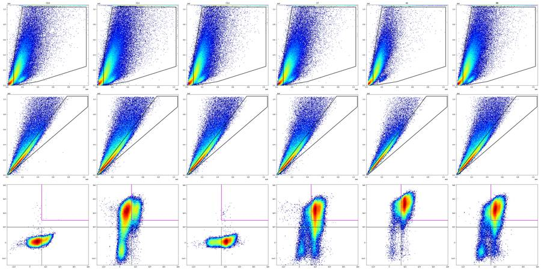
103
tool call · Bash
python3 -I - <<'EOF'
import sys; sys.path.insert(0,'/task/work')
import pickle, numpy as np, pandas as pd
from matplotlib.path import Path
import build as B
data=pickle.load(open('data.pkl','rb'))
np.set_printoptions(linewidth=250,suppress=True)
def masks(df):
c=Path(B.CELLS).contains_points(df[['FSC-A','SSC-A']].values)
s=c&Path(B.SING).contains_points(df[['SSC-H','SSC-A']].values)
live=s&(df['RL3-A'].values<=B.RL3_LIVE_MAX)
cp=live&(df['BL1-A'].values>=B.BL1_POS_MIN)
late=s&(df['RL3-A'].values>=B.RL3_BRIGHT_MIN)&(df['BL1-A'].values>=B.BL1_POS_MIN)
return c,s,live,cp,late
seg=np.arange(0,45,5)
print('per 5-s segment: n(k) | Cells% | Live% of single | Casp% of live | Late% of single')
for w,df in data.items():
c,s,live,cp,late=masks(df); t=df['Time'].values
out=[]
for a,b in zip(seg[:-1],seg[1:]):
m=(t>=a)&(t<b)
if m.sum()==0: out.append((0,np.nan,np.nan,np.nan,np.nan)); continue
out.append((m.sum()/1000,100*c[m].mean(),100*live[m].sum()/max(s[m].sum(),1),100*cp[m].sum()/max(live[m].sum(),1),100*late[m].sum()/max(s[m].sum(),1)))
o=np.array(out)
print(w.ljust(4),'n',' '.join(f'{x:5.1f}' for x in o[:,0]),'| C',' '.join(f'{x:4.0f}' for x in o[:,1]),'| L',' '.join(f'{x:5.1f}' for x in o[:,2]),'| Cp',' '.join(f'{x:4.0f}' for x in o[:,3]),'| La',' '.join(f'{x:4.0f}' for x in o[:,4]))
EOF104
tool output
per 5-s segment: n(k) | Cells% | Live% of single | Casp% of live | Late% of single A1 n 22.9 23.2 22.9 23.1 23.7 22.4 21.2 19.8 | C 53 54 56 58 59 60 58 55 | L 1.7 1.7 1.6 1.9 1.6 1.7 1.7 1.8 | Cp 32 32 31 35 28 25 28 26 | La 86 87 87 85 86 84 84 83 A2 n 30.1 27.4 27.2 27.8 28.5 27.5 25.6 23.6 | C 54 54 55 58 59 58 59 56 | L 5.2 5.1 5.5 5.7 5.7 5.7 5.4 5.2 | Cp 23 24 26 22 19 21 19 27 | La 83 83 83 82 81 81 80 80 A3 n 27.1 28.1 28.1 28.2 28.4 27.0 26.2 25.3 | C 55 56 58 60 62 61 61 58 | L 5.3 4.8 5.2 5.5 5.0 5.4 4.6 5.0 | Cp 55 52 56 53 52 50 47 50 | La 82 83 83 82 82 80 80 80 A4 n 20.6 20.5 20.3 21.4 20.7 19.2 18.4 17.3 | C 58 58 61 63 63 63 61 59 | L 4.3 4.4 4.3 4.3 4.1 4.0 3.9 3.9 | Cp 31 34 28 25 26 21 29 30 | La 85 85 84 84 82 83 82 82 A5 n 20.3 21.6 21.5 21.5 22.1 20.7 20.1 18.8 | C 54 54 57 59 61 60 59 56 | L 7.2 7.3 6.7 7.2 7.2 6.6 7.0 7.5 | Cp 48 43 44 44 43 42 45 42 | La 80 81 81 80 80 79 78 78 A6 n 29.3 29.4 29.0 30.3 30.5 27.8 26.1 25.3 | C 56 57 59 62 63 61 60 58 | L 8.9 8.8 8.2 9.1 8.7 8.6 8.4 9.0 | Cp 22 23 23 24 23 26 25 23 | La 81 81 82 80 80 80 80 79 A7 n 39.2 35.3 34.8 35.8 36.7 34.5 32.0 30.4 | C 53 54 55 58 59 59 57 56 | L 8.3 7.6 8.1 8.1 8.2 8.9 8.6 7.6 | Cp 19 18 21 19 18 19 19 21 | La 80 81 81 80 80 78 78 78 A8 n 29.3 29.8 29.7 30.6 31.6 30.1 26.4 24.5 | C 55 56 57 60 61 60 59 56 | L 12.6 13.3 12.9 12.5 12.9 12.7 12.7 12.4 | Cp 29 32 32 31 27 30 29 29 | La 75 75 75 75 75 74 74 74 A9 n 31.4 31.0 30.4 31.5 31.9 29.4 27.1 26.1 | C 56 57 58 61 62 61 60 58 | L 7.1 7.1 6.9 6.9 6.9 7.2 6.7 6.8 | Cp 22 25 23 23 25 22 23 22 | La 83 83 82 83 83 81 81 81 A10 n 43.9 42.8 43.4 44.2 43.7 40.8 38.3 35.5 | C 55 57 57 60 59 59 58 56 | L 4.8 4.6 4.7 4.4 4.4 4.6 4.5 4.4 | Cp 19 20 19 18 22 22 18 20 | La 84 85 85 85 84 83 83 83 A11 n 28.0 28.5 28.8 29.3 29.5 27.7 26.2 25.2 | C 51 52 54 56 57 57 55 53 | L 8.1 8.6 7.5 8.1 8.0 8.0 8.3 8.1 | Cp 32 33 33 37 34 32 32 33 | La 81 81 82 81 81 80 80 79 A12 n 43.2 42.7 42.4 42.9 42.5 39.4 37.4 36.5 | C 52 53 56 58 58 57 56 53 | L 6.5 6.1 6.1 6.4 6.1 6.2 5.8 6.4 | Cp 27 27 32 28 29 27 32 32 | La 82 83 83 83 83 82 82 81 B1 n 32.9 32.6 32.4 33.5 33.8 30.6 29.4 27.8 | C 52 54 56 59 59 57 56 53 | L 11.0 10.4 10.9 10.8 11.3 11.4 10.3 10.6 | Cp 28 27 27 28 26 26 24 26 | La 75 76 76 76 75 74 75 74 B2 n 40.2 41.3 39.1 40.7 42.3 36.8 37.4 35.1 | C 51 53 54 57 59 55 57 53 | L 15.0 15.7 15.5 15.1 15.3 15.2 15.1 15.7 | Cp 43 42 45 42 43 43 42 43 | La 72 71 72 72 72 71 71 70 B3 n 34.8 35.3 35.3 36.4 35.7 33.3 32.2 30.2 | C 54 56 58 60 60 60 58 55 | L 13.7 13.3 12.8 13.0 13.3 13.2 12.9 13.2 | Cp 35 37 38 34 36 35 36 33 | La 75 75 75 75 75 74 74 74 B4 n 27.3 27.3 27.0 27.6 28.5 27.4 25.5 24.3 | C 51 53 54 56 58 57 56 54 | L 4.5 4.5 4.8 4.7 5.0 4.7 4.4 4.4 | Cp 28 31 25 29 28 25 26 27 | La 83 83 83 83 82 81 81 81 B5 n 28.9 28.3 28.3 29.2 29.2 27.0 25.9 25.6 | C 52 53 54 57 58 57 55 53 | L 7.4 7.5 7.0 6.9 7.2 7.5 7.2 8.0 | Cp 35 36 34 36 32 32 31 33 | La 80 80 81 80 80 79 79 78 B6 n 45.7 46.5 46.3 47.0 47.4 44.8 41.9 40.9 | C 52 53 55 57 58 57 56 53 | L 9.3 8.8 8.2 8.8 9.2 9.0 8.7 8.9 | Cp 47 46 47 46 47 46 47 43 | La 78 79 80 79 79 78 78 78 B7 n 23.0 23.9 23.6 23.6 23.9 23.1 21.6 20.0 | C 55 55 56 58 60 60 59 56 | L 4.6 4.6 5.0 4.8 5.0 4.9 4.3 4.6 | Cp 33 32 36 35 31 32 30 30 | La 85 85 85 84 83 83 82 82 B8 n 62.4 50.4 49.8 51.4 51.2 48.7 46.7 44.9 | C 53 53 56 58 59 59 57 55 | L 5.8 5.6 5.8 5.6 6.0 5.8 5.6 5.5 | Cp 53 53 55 51 54 50 51 53 | La 80 81 81 81 80 80 80 79 B9 n 29.1 28.5 28.0 29.7 29.2 27.0 23.7 23.0 | C 55 54 57 60 60 59 56 54 | L 4.8 5.0 4.6 5.3 5.3 5.0 5.0 4.6 | Cp 35 38 41 36 35 37 33 31 | La 83 84 84 83 82 82 82 82 B10 n 23.3 24.0 23.4 23.6 23.8 21.7 21.9 20.8 | C 53 53 55 57 59 57 56 54 | L 4.4 4.3 4.3 4.3 4.2 4.2 4.5 3.9 | Cp 32 32 29 30 28 30 28 27 | La 84 84 84 83 82 82 82 82 B11 n 36.2 35.8 35.5 36.4 35.4 33.3 31.6 25.9 | C 55 56 58 60 60 59 57 56 | L 6.2 5.8 5.8 5.9 6.3 5.8 5.7 5.5 | Cp 48 48 48 46 47 50 46 49 | La 83 83 83 83 82 82 82 82 B12 n 36.1 36.7 36.0 36.9 37.5 35.0 31.9 30.7 | C 54 55 57 60 60 59 58 54 | L 5.5 5.8 5.7 5.5 6.0 5.5 5.4 5.5 | Cp 54 57 55 53 54 56 55 56 | La 82 82 82 82 81 81 81 81 C1 n 0.3 7.2 24.4 44.4 43.1 43.3 60.7 26.4 | C 48 42 52 61 61 61 61 52 | L 0.9 4.3 3.2 2.0 2.1 … [2,758 more characters not shown]
106
agent
Only C1 and C2 show time-unstable populations; now checking GFP wells, saturation and control identity before writing the flags.
107
tool call · Bash
python3 -I - <<'EOF'
import sys; sys.path.insert(0,'/task/work')
import pickle, numpy as np, pandas as pd
from matplotlib.path import Path
import build as B
data=pickle.load(open('data.pkl','rb'))
rows=[]
for w,df in data.items():
c=Path(B.CELLS).contains_points(df[['FSC-A','SSC-A']].values)
s=c&Path(B.SING).contains_points(df[['SSC-H','SSC-A']].values)
d=df[s]; t=df['Time'].values
h,_=np.histogram(t,np.arange(0,41.25,0.25));
rows.append(dict(well=w, n=len(df), nS=len(d),
BL1_gt1e4_pct=round(100*(d['BL1-A']>1e4).mean(),3), BL1_gt3e4_pct=round(100*(d['BL1-A']>3e4).mean(),3),
BL1_sat_S=int((d['BL1-A']>=1048575).sum()), RL3_sat_S=int((d['RL3-A']>=1048575).sum()),
RL3_sat_all_pct=round(100*(df['RL3-A']>=1048575).mean(),3),
SSCA_sat_all_pct=round(100*(df['SSC-A']>=1048575).mean(),2), FSCA_sat_all_pct=round(100*(df['FSC-A']>=1048575).mean(),2),
neg65536=int((df[['FSC-A','SSC-A','BL1-A','RL3-A']]<=-65536).any(axis=1).sum()),
BL1_med_S=np.median(d['BL1-A']), RL3_med_S=np.median(d['RL3-A']),
first5s=int((t<5).sum()), rateCV=round(np.std(h[8:160])/np.mean(h[8:160]),2), zero_bins=int((h[:160]==0).sum()),
last_evt=round(t.max(),2)))
pd.set_option('display.width',300); print(pd.DataFrame(rows).to_string())
pd.DataFrame(rows).to_csv('qc.csv',index=False)
EOF108
tool output
well n nS BL1_gt1e4_pct BL1_gt3e4_pct BL1_sat_S RL3_sat_S RL3_sat_all_pct SSCA_sat_all_pct FSCA_sat_all_pct neg65536 BL1_med_S RL3_med_S first5s rateCV zero_bins last_evt 0 A1 183353 79977 0.001 0.000 0 0 0.061 1.82 0.15 0 928.0 39933.0 22882 0.07 0 40.89 1 A2 221770 91801 0.000 0.000 0 0 0.135 2.53 0.25 18 926.0 40966.0 30134 0.09 0 40.89 2 A3 222545 102369 0.002 0.000 0 0 0.061 1.21 0.07 30 934.0 28981.0 27109 0.08 0 40.96 3 A4 160440 75163 0.000 0.000 0 0 0.113 2.34 0.21 13 936.0 24077.0 20616 0.11 0 41.08 4 A5 169911 75554 0.000 0.000 0 0 0.014 2.25 0.10 5 919.0 14034.0 20310 0.08 0 40.86 5 A6 230857 106584 0.005 0.000 0 0 0.047 1.79 0.11 8 947.0 32983.0 29335 0.09 0 40.90 6 A7 282723 114755 0.003 0.000 0 0 0.106 3.19 0.33 55 971.0 29805.0 39233 0.16 0 40.65 7 A8 236938 101339 0.011 0.000 0 0 0.041 3.64 0.24 30 1013.0 20709.0 29273 0.11 0 40.94 8 A9 241833 107346 0.006 0.000 0 0 0.064 2.82 0.19 22 962.0 35425.5 31350 0.13 0 40.94 9 A10 335810 142679 0.001 0.000 0 0 0.036 2.25 0.11 16 974.0 33855.0 43872 0.10 0 40.64 10 A11 228556 94264 0.002 0.000 0 0 0.028 2.51 0.16 17 1042.0 22883.0 28040 0.13 0 40.95 11 A12 330844 134570 0.008 0.000 0 0 0.031 2.35 0.12 38 999.0 24875.0 43248 0.10 0 40.90 12 B1 254845 105118 0.002 0.000 0 0 0.060 3.07 0.23 24 952.0 28303.0 32851 0.13 0 40.98 13 B2 319449 125456 0.015 0.000 0 0 0.008 3.15 0.34 72 1054.0 9693.0 40184 0.21 0 40.87 14 B3 275473 115180 0.010 0.000 0 0 0.010 3.06 0.25 88 1050.0 14826.5 34817 0.14 0 40.88 15 B4 219859 92674 0.002 0.000 0 0 0.165 2.35 0.28 58 889.0 27140.5 27335 0.12 0 40.93 16 B5 225148 93879 0.002 0.001 0 0 0.026 2.56 0.16 12 981.0 16330.0 28917 0.09 0 41.00 17 B6 369018 147806 0.003 0.000 0 0 0.015 2.15 0.16 29 1068.0 14875.5 45746 0.11 0 40.87 18 B7 186946 86501 0.000 0.000 0 0 0.032 1.33 0.11 5 935.0 18981.0 22991 0.08 0 41.00 19 B8 412353 168238 0.003 0.000 0 0 0.005 1.91 0.10 7 956.0 13328.0 62387 0.17 0 40.65 20 B9 219409 96170 0.003 0.000 0 0 0.017 2.02 0.12 15 916.0 20702.5 29111 0.12 0 40.96 21 B10 187472 82634 0.002 0.000 0 0 0.043 1.65 0.08 24 896.0 36925.5 23287 0.12 0 40.94 22 B11 271438 120094 0.007 0.001 0 0 0.006 1.83 0.06 4 989.0 16205.0 36166 0.13 0 40.94 23 B12 286933 125784 0.005 0.000 0 0 0.003 1.61 0.05 5 966.0 12422.5 36084 0.08 0 40.82 24 C1 250794 103915 0.003 0.000 0 0 0.025 2.78 0.33 1863 676.0 31417.0 259 0.84 5 40.72 25 C2 305451 129684 0.006 0.000 0 0 0.049 2.94 0.31 1536 810.0 24090.0 504 0.51 0 40.93 26 C3 418796 168893 0.008 0.000 0 0 0.013 3.24 0.27 124 926.0 11448.0 47813 0.11 0 40.74 27 C4 230134 104346 0.169 0.035 0 0 0.005 1.79 0.08 10 877.0 19459.5 24571 0.07 0 40.97 28 C5 206789 95327 0.144 0.041 0 0 0.006 1.81 0.06 0 899.0 19468.0 26290 0.12 0 40.91 29 C6 189779 86181 … [1,362 more characters not shown]
110
tool call · Bash
python3 -I - <<'EOF'
import sys; sys.path.insert(0,'/task/work')
import pickle, numpy as np, pandas as pd
from matplotlib.path import Path
import build as B
data=pickle.load(open('data.pkl','rb'))
for w in ['C3','C4','C5','C6','C7','C8','C9','C12','A1','B6']:
df=data[w]
c=Path(B.CELLS).contains_points(df[['FSC-A','SSC-A']].values)
s=c&Path(B.SING).contains_points(df[['SSC-H','SSC-A']].values)
d=df[s]; l=d[d['RL3-A']<=1000]
print(w,'single BL1 pct 50/90/99/99.9/99.99',np.percentile(d['BL1-A'],[50,90,99,99.9,99.99]).round(0),'>5e3: %.3f%% n=%d'%(100*(d['BL1-A']>5e3).mean(),(d['BL1-A']>5e3).sum()),
'| live n',len(l),'BL1 pct 25/50/75/95/99',np.percentile(l['BL1-A'],[25,50,75,95,99]).round(0),'live>5e3 n=%d'%(l['BL1-A']>5e3).sum(),
'| all events >1e4: %d (%.3f%%), >1e5: %d'%((df['BL1-A']>1e4).sum(),100*(df['BL1-A']>1e4).mean(),(df['BL1-A']>1e5).sum()))
EOF111
tool output
C3 single BL1 pct 50/90/99/99.9/99.99 [ 926. 1869. 3413. 5292. 9645.] >5e3: 0.133% n=224 | live n 13045 BL1 pct 25/50/75/95/99 [ 155. 591. 874. 1580. 3151.] live>5e3 n=60 | all events >1e4: 3324 (0.794%), >1e5: 42 C4 single BL1 pct 50/90/99/99.9/99.99 [ 877. 1844. 3717. 14673. 55695.] >5e3: 0.483% n=504 | live n 1539 BL1 pct 25/50/75/95/99 [ 425. 597. 796. 1532. 2822.] live>5e3 n=9 | all events >1e4: 2767 (1.202%), >1e5: 231 C5 single BL1 pct 50/90/99/99.9/99.99 [ 899. 1824. 3510. 13145. 56802.] >5e3: 0.412% n=393 | live n 1921 BL1 pct 25/50/75/95/99 [ 494. 667. 858. 1449. 2427.] live>5e3 n=7 | all events >1e4: 2519 (1.218%), >1e5: 282 C6 single BL1 pct 50/90/99/99.9/99.99 [ 944. 1937. 3792. 16008. 59289.] >5e3: 0.500% n=431 | live n 964 BL1 pct 25/50/75/95/99 [ 542. 722. 980. 1621. 2693.] live>5e3 n=2 | all events >1e4: 2510 (1.323%), >1e5: 240 C7 single BL1 pct 50/90/99/99.9/99.99 [ 1044. 2246. 4000. 6014. 12348.] >5e3: 0.292% n=345 | live n 20995 BL1 pct 25/50/75/95/99 [ 253. 815. 1131. 2101. 3135.] live>5e3 n=31 | all events >1e4: 4463 (1.404%), >1e5: 205 C8 single BL1 pct 50/90/99/99.9/99.99 [ 982. 2043. 3803. 6308. 12395.] >5e3: 0.276% n=223 | live n 6262 BL1 pct 25/50/75/95/99 [ 49. 124. 722. 1892. 3991.] live>5e3 n=47 | all events >1e4: 2710 (1.261%), >1e5: 154 C9 single BL1 pct 50/90/99/99.9/99.99 [ 1069. 2267. 4131. 6476. 16199.] >5e3: 0.400% n=334 | live n 11900 BL1 pct 25/50/75/95/99 [ 70. 297. 941. 1943. 3615.] live>5e3 n=56 | all events >1e4: 3421 (1.538%), >1e5: 209 C12 single BL1 pct 50/90/99/99.9/99.99 [ 1111. 2275. 4126. 6690. 14093.] >5e3: 0.414% n=490 | live n 118382 BL1 pct 25/50/75/95/99 [ 751. 1111. 1505. 2780. 4125.] live>5e3 n=490 | all events >1e4: 4363 (1.419%), >1e5: 111 A1 single BL1 pct 50/90/99/99.9/99.99 [ 928. 1850. 3232. 4687. 5950.] >5e3: 0.056% n=45 | live n 1363 BL1 pct 25/50/75/95/99 [ 79. 159. 574. 1087. 1736.] live>5e3 n=1 | all events >1e4: 742 (0.405%), >1e5: 5 B6 single BL1 pct 50/90/99/99.9/99.99 [1068. 2188. 3789. 5666. 7789.] >5e3: 0.209% n=309 | live n 13080 BL1 pct 25/50/75/95/99 [ 85. 380. 955. 1710. 2612.] live>5e3 n=21 | all events >1e4: 2307 (0.625%), >1e5: 40
113
tool call · Bash
python3 -I - <<'EOF'
import sys; sys.path.insert(0,'/task/work')
import pickle, numpy as np, pandas as pd
from matplotlib.path import Path
import build as B
data=pickle.load(open('data.pkl','rb'))
tot=0
for w,df in data.items():
c=Path(B.CELLS).contains_points(df[['FSC-A','SSC-A']].values)
s=c&Path(B.SING).contains_points(df[['SSC-H','SSC-A']].values)
d=df[s]; l=d[d['RL3-A']<=1000]
x=((l['RL3-A']<-3000)|(l['BL1-A']<-3000)).sum(); tot+=x
if x>20 or w in('C1','C2','C7'): print(w,len(l),'live events with RL3 or BL1 < -3000:',x,' of which <-60000:',((l['RL3-A']<-60000)|(l['BL1-A']<-60000)).sum())
print('total',tot)
# which channels carry -65536 in C1
df=data['C1']; print((df[['FSC-A','SSC-A','BL1-A','RL3-A','FSC-H','SSC-H']]<=-65536).sum())
m=(df[['FSC-A','SSC-A','BL1-A','RL3-A']]<=-65536).any(axis=1); print(np.histogram(df['Time'][m],bins=np.arange(0,45,5))[0])
# C4-C6 live BL1 histogram vs C7-9
b=[-1e4,0,100,200,300,400,500,600,800,1000,1500,2000,3000,5000,1e4,1e7]
for w in ['C4','C5','C6','C7','C8','C9','C3']:
df=data[w]; c=Path(B.CELLS).contains_points(df[['FSC-A','SSC-A']].values); s=c&Path(B.SING).contains_points(df[['SSC-H','SSC-A']].values)
l=df[s&(df['RL3-A']<=1000)]; h=np.histogram(l['BL1-A'],b)[0]; print(w,(100*h/h.sum()).round(1))
EOF114
tool output
A7 9367 live events with RL3 or BL1 < -3000: 35 of which <-60000: 3 B4 4298 live events with RL3 or BL1 < -3000: 31 of which <-60000: 1 C1 2229 live events with RL3 or BL1 < -3000: 137 of which <-60000: 0 C2 6049 live events with RL3 or BL1 < -3000: 217 of which <-60000: 3 C7 20995 live events with RL3 or BL1 < -3000: 158 of which <-60000: 2 C8 6262 live events with RL3 or BL1 < -3000: 94 of which <-60000: 3 C9 11900 live events with RL3 or BL1 < -3000: 110 of which <-60000: 6 C11 21077 live events with RL3 or BL1 < -3000: 174 of which <-60000: 0 total 1081 FSC-A 135 SSC-A 1745 BL1-A 0 RL3-A 0 FSC-H 0 SSC-H 0 dtype: int64 [ 0 425 702 490 74 112 43 0] C4 [ 0.3 1.1 4.5 5.9 10.3 13.5 14.9 25. 11.5 7.9 3.1 1.2 0.3 0.1 0.5] C5 [ 0.3 0.7 3. 4.6 6.8 10.3 14.8 29. 14.7 11.5 2.8 1. 0.2 0.1 0.3] C6 [ 0.4 0.8 3. 3.7 6. 6.3 12. 28.4 16.2 16.1 4.1 2.1 0.5 0. 0.2] C7 [ 4.2 12.4 6.6 3. 2.5 3.3 4.3 12.5 16.8 20.9 7.4 4.8 1.1 0.1 0. ] C8 [ 9.1 35.3 15.3 4.2 2.6 2.4 2.4 6.4 6.1 7.5 4.4 2.6 1. 0.6 0.1] C9 [ 6.6 25.8 12.9 4.7 3.1 3.1 3.4 8.1 9.9 13.1 4.6 2.9 1.3 0.3 0.1] C3 [ 3.5 15. 9.9 5. 4.2 5.8 7.4 17.7 14.3 11.4 3.3 1.5 0.7 0.4 0.1]
116
tool call · Bash
cat > flags.py <<'EOF'
import sys; sys.path.insert(0,'/task/work')
import pickle, numpy as np, pandas as pd
data=pickle.load(open('data.pkl','rb'))
layout=pd.read_csv('/task/inputs/plate_layout.csv')
counts=pd.read_csv('/task/outputs/counts.csv')
cnt=counts.pivot(index='well',columns='population',values='count'); pc=counts.pivot(index='well',columns='population',values='pct_of_parent')
import build as B
from matplotlib.path import Path
rows=[]
for _,r in layout.iterrows():
w=r.well; df=data[w]; t=df['Time'].values; n=len(df)
h,_=np.histogram(t,np.arange(0,41.25,0.25)); med=np.median(h[8:120]); cv=np.std(h[8:160])/np.mean(h[8:160])
first5=int((t<5).sum()); exp5=med*20
zero=int((h[:160]==0).sum()); lowb=int((h[:156]<0.5*med).sum()); hib=int((h[:156]>1.5*med).sum())
k=len(h)-1
while k>=0 and h[k]<0.5*med: k-=1
tail_start=(k+1)*0.25; ntail=int((t>=tail_start).sum()) if tail_start<t.max() else 0
# per-5s stability of gated fractions
c=Path(B.CELLS).contains_points(df[['FSC-A','SSC-A']].values); s=c&Path(B.SING).contains_points(df[['SSC-H','SSC-A']].values)
live=s&(df['RL3-A'].values<=B.RL3_LIVE_MAX); late=s&(df['RL3-A'].values>=B.RL3_BRIGHT_MIN)&(df['BL1-A'].values>=B.BL1_POS_MIN)
lv=[];la=[]
for a in range(0,40,5):
m=(t>=a)&(t<a+5)
if s[m].sum()>=100: lv.append(100*live[m].sum()/s[m].sum()); la.append(100*late[m].sum()/s[m].sum())
railneg=int((df[['FSC-A','SSC-A']]<=-65536).any(axis=1).sum())
base=f"{n} events in {t.max():.1f} s; plateau rate {med*4:.0f} ev/s, rate CV {cv:.2f} (0.25-s bins, 2-40 s); events in first 5 s {first5} (expected ~{exp5:.0f}); Live count {cnt.loc[w,'Live']}"
stab=f"Live% of Single_Cells across 5-s time slices {min(lv):.1f}-{max(lv):.1f}, Late_apoptosis% {min(la):.0f}-{max(la):.0f}"
if w in ('C1','C2'):
usable='no'; cat='clog_or_interrupted_flow'
ev=(f"Flow not established/unstable for the whole run: only {first5} events in the first 5 s (expected ~{exp5:.0f}), then erratic bursts - rate CV {cv:.2f} vs 0.07-0.31 in the other 34 wells; "
f"{lowb} of 156 quarter-second bins <50% and {hib} >150% of the median rate; {railneg} events with scatter at the negative rail (-65536) vs median ~20 per well; "
f"median FSC-A/RL3-A jump several-fold between time bins; gated fractions drift with time ({stab}), so percentages are not trustworthy. {n} events total.")
else:
usable='yes'; cat='ok'
extra=[]
if ntail>0 and (t.max()-tail_start)>=0.8:
extra.append(f"rate falls below half of plateau only in the last {t.max()-tail_start:.1f} s ({ntail} events, {100*ntail/n:.1f}% of file, low-FSC) - end-of-sample tail, too small to affect counts")
if cv>=0.2:
extra.append(f"brief sub-second rate dips ({lowb} quarter-second bins <50% of plateau) but no sustained gap")
if r.control_type=='unstained':
extra.append(f"control as labelled: Single_Cells median BL1-A {np.median(df['BL1-A'][s]):.0f}, RL3-A {np.median(df['RL3-A'][s]):.0f}; {pc.loc[w,'Live']:.2f}% RL3-low, Late_apoptosis {cnt.loc[w,'Late_apoptosis']} events")
if r.control_type=='viability_dye_only':
extra.append(f"control as labelled: BL1-A median {np.median(df['BL1-A'][s]):.0f} (unstained level, C10 245), RL3-A median {np.median(df['RL3-A'][s]):.0f} with distinct negative and bright populations; Caspase_pos background {pc.loc[w,'Caspase_pos']:.1f}% of Live")
if r.control_type=='caspase_dye_only':
extra.append(f"control as labelled: RL3-A median {np.median(df['RL3-A'][s]):.0f} (unstained level), BL1-A median {np.median(df['BL1-A'][s]):.0f} vs 245 unstained; {pc.loc[w,'Live']:.2f}% RL3-low")
if r.control_type=='transduction_gfp':
d=df[s]
extra.append(f"GFP visible in BL1-A: {100*(d['BL1-A']>1e4).mean():.2f}% of Single_Cells >1e4 (<=0.03% in non-GFP wells) and Live cells lack the BL1-negative cluster, so Caspase_pos ({pc.loc[w,'Caspase_pos']:.0f}% of Live) is GFP+caspase, not a caspase readout; acquisition itself is clean")
ev=base+"; "+stab+("; "+"; ".join(extra) if extra else "; stable acquisition, no saturation in gated cells (0 Single_Cells at BL1-A/RL3-A maximum)")
rows.append(dict(file=r.file,well=w,usable=usable,reason_category=cat,evidence=ev))
out=pd.DataFrame(rows); out.to_csv('/task/outputs/flags.csv',index=False)
for _,x in out.iterrows(): print(x.well,x.usable,x.reason_category,'|',x.evidence)
EOF
python3 -I flags.py117
tool output
A1 yes ok | 183353 events in 40.9 s; plateau rate 4608 ev/s, rate CV 0.07 (0.25-s bins, 2-40 s); events in first 5 s 22882 (expected ~23040); Live count 1363; Live% of Single_Cells across 5-s time slices 1.6-1.9, Late_apoptosis% 83-87; stable acquisition, no saturation in gated cells (0 Single_Cells at BL1-A/RL3-A maximum) A2 yes ok | 221770 events in 40.9 s; plateau rate 5506 ev/s, rate CV 0.09 (0.25-s bins, 2-40 s); events in first 5 s 30134 (expected ~27530); Live count 5035; Live% of Single_Cells across 5-s time slices 5.1-5.7, Late_apoptosis% 80-83; stable acquisition, no saturation in gated cells (0 Single_Cells at BL1-A/RL3-A maximum) A3 yes ok | 222545 events in 41.0 s; plateau rate 5604 ev/s, rate CV 0.08 (0.25-s bins, 2-40 s); events in first 5 s 27109 (expected ~28020); Live count 5222; Live% of Single_Cells across 5-s time slices 4.6-5.5, Late_apoptosis% 80-83; stable acquisition, no saturation in gated cells (0 Single_Cells at BL1-A/RL3-A maximum) A4 yes ok | 160440 events in 41.1 s; plateau rate 4082 ev/s, rate CV 0.11 (0.25-s bins, 2-40 s); events in first 5 s 20616 (expected ~20410); Live count 3108; Live% of Single_Cells across 5-s time slices 3.9-4.4, Late_apoptosis% 82-85; stable acquisition, no saturation in gated cells (0 Single_Cells at BL1-A/RL3-A maximum) A5 yes ok | 169911 events in 40.9 s; plateau rate 4296 ev/s, rate CV 0.08 (0.25-s bins, 2-40 s); events in first 5 s 20310 (expected ~21480); Live count 5339; Live% of Single_Cells across 5-s time slices 6.6-7.5, Late_apoptosis% 78-81; stable acquisition, no saturation in gated cells (0 Single_Cells at BL1-A/RL3-A maximum) A6 yes ok | 230857 events in 40.9 s; plateau rate 5904 ev/s, rate CV 0.09 (0.25-s bins, 2-40 s); events in first 5 s 29335 (expected ~29520); Live count 9249; Live% of Single_Cells across 5-s time slices 8.2-9.1, Late_apoptosis% 79-82; stable acquisition, no saturation in gated cells (0 Single_Cells at BL1-A/RL3-A maximum) A7 yes ok | 282723 events in 40.6 s; plateau rate 7144 ev/s, rate CV 0.16 (0.25-s bins, 2-40 s); events in first 5 s 39233 (expected ~35720); Live count 9366; Live% of Single_Cells across 5-s time slices 7.6-8.9, Late_apoptosis% 78-81; stable acquisition, no saturation in gated cells (0 Single_Cells at BL1-A/RL3-A maximum) A8 yes ok | 236938 events in 40.9 s; plateau rate 6040 ev/s, rate CV 0.11 (0.25-s bins, 2-40 s); events in first 5 s 29273 (expected ~30200); Live count 12901; Live% of Single_Cells across 5-s time slices 12.4-13.3, Late_apoptosis% 74-75; stable acquisition, no saturation in gated cells (0 Single_Cells at BL1-A/RL3-A maximum) A9 yes ok | 241833 events in 40.9 s; plateau rate 6194 ev/s, rate CV 0.13 (0.25-s bins, 2-40 s); events in first 5 s 31350 (expected ~30970); Live count 7467; Live% of Single_Cells across 5-s time slices 6.7-7.2, Late_apoptosis% 81-83; stable acquisition, no saturation in gated cells (0 Single_Cells at BL1-A/RL3-A maximum) A10 yes ok | 335810 events in 40.6 s; plateau rate 8604 ev/s, rate CV 0.10 (0.25-s bins, 2-40 s); events in first 5 s 43872 (expected ~43020); Live count 6473; Live% of Single_Cells across 5-s time slices 4.4-4.8, Late_apoptosis% 83-85; stable acquisition, no saturation in gated cells (0 Single_Cells at BL1-A/RL3-A maximum) A11 yes ok | 228556 events in 41.0 s; plateau rate 5776 ev/s, rate CV 0.13 (0.25-s bins, 2-40 s); events in first 5 s 28040 (expected ~28880); Live count 7641; Live% of Single_Cells across 5-s time slices 7.5-8.6, Late_apoptosis% 79-82; stable acquisition, no saturation in gated cells (0 Single_Cells at BL1-A/RL3-A maximum) A12 yes ok | 330844 events in 40.9 s; plateau rate 8512 ev/s, rate CV 0.10 (0.25-s bins, 2-40 s); events in first 5 s 43248 (expected ~42560); Live count 8330; Live% of Single_Cells across 5-s time slices 5.8-6.5, Late_apoptosis% 81-83; stable acquisition, no saturation in gated cells (0 Single_Cells at BL1-A/RL3-A maximum) B1 yes ok | 254845 events in 41.0 s; plateau rate 6586 ev/s, rate CV 0.13 (0.25-s bins, 2-40 s); events in first 5 s 32851 (expected ~32930); Live count 11350; Live% of Single_Cells across 5-s time slices 10.3-11.4, Late_apoptosis% 74-76; rate falls below half of plateau only in the last 1.2 s (2657 events, 1.0% of file, low-FSC) - end-of-sample tail, too small to affect counts B2 yes ok | 319449 events in 40.9 s; plateau rate 8186 ev/s, rate CV 0.21 (0.25-s bins, 2-40 s); events in first 5 s 40184 (expected ~40930); Live count 19191; Live% of Single_Cells across 5-s time slices 15.0-15.7, Late_apoptosis% 70-72; brief sub-second rate dips (5 quarter-second bins <50% of plateau) but no sustained gap B3 yes ok | 275473 events in 40.9 s; plateau rate 7064 ev/s, rate CV 0.14 (0.25-s bins, 2-40 s); events in first 5 s 34817 (expected ~35320); Live count 15161; Live% of Single_Cells across 5-s time slices 12.8-13.7, Late_apoptosis% 74-75; rate falls below half of plateau only in the last 0.9 s (2329 events, 0.8% of file, low-FSC) - end-of-sample tail, too small to affect counts B4 yes ok | 219859 events in 40.9 s; plateau rate 5500 ev/s, rate CV 0.12 (0.25-s bins, 2-40 s); events in first 5 s 27335 (expected ~27500); Live count 4298; Live% of Single_Cells across 5-s time slices 4.4-5.0, Late_apoptosis% 81-83; stable acquisition, no saturation in gated cells (0 Single_Cells at BL1-A/RL3-A maximum) B5 yes ok | 225148 events in 41.0 s; plateau rate 5736 ev/s, rate CV 0.09 (0.25-s bins, 2-40 s); events in first 5 s 28917 (expected ~28680); Live count 6838; Live% of Single_Cells across 5-s time slices 6.9-8.0, Late_apoptosis% 78-81; stable acquisition, no saturation in gated cells (0 Single_Cells at BL1-A/RL3-A maximum) B6 yes ok | 369018 events in 40.9 s; plateau rate 9250 ev/s, rate CV 0.11 (0.25-s bins, 2-40 s); events in first 5 s 45746 (expected ~46250); Live count 13077; Live% of Single_Cells across 5-s time slices 8.2-9.3, Late_apoptosis% 78-80; stable acquisition, no saturation in gated cells (0 Single_Cells at BL1-A/RL3-A maximum) B7 yes ok | 186946 events in … [7,554 more characters not shown]
119
agent
Flags are written; finishing with `notes.md` and a final reload check of the saved gates against `counts.csv`.
120
tool call · Write
{
"file_path": "/task/outputs/notes.md",
"content": "# Gating notes \u2014 Caspase_KO_RNAswap-rep2 (36 wells, one gate set)\n\nAll gates are in raw, uncompensated detector units (`compensation_ref=\"uncompensated\"`, no transform). The fluorescence gates have only axis-aligned edges, so they select the same events on a linear or a logicle display. `counts.csv` is `gate_sample()` output from the reloaded `gates.xml`.\n\n## Gate placement\n| Gate | Coordinates | Why |\n|---|---|---|\n| `Cells` (polygon, FSC-A \u00d7 SSC-A) | (85k, 8k) (85k, 330k) (200k, 1.03M) (1.03M, 1.03M) (1.03M, 250k) (400k, 50k) (150k, 8k) | The FSC-A histogram has a debris peak at the 25k threshold and a cell peak near 125k, with the valley at 75\u201395k; the left edge is at 85k. The bottom edge is kept low on purpose: a low-SSC cluster (FSC-A 130\u2013250k, SSC-A 40\u2013120k) is the Zombie-negative, caspase-negative healthy cells. Events on the 1,048,575 rail are excluded. 51\u201361 % of events. |\n| `Single_Cells` (polygon, SSC-H \u00d7 SSC-A) | (\u22121k, \u221210k) (\u22121k, 10k) (780k, 1.04M) (1.05M, 1.04M) (1.05M, 900k) | Diagonal band with SSC-A between about 0.87 \u00d7 and 1.32 \u00d7 SSC-H. The SSC-A/SSC-H mode is 1.05\u20131.2 and density falls to about 25 % of peak by 1.25\u20131.4; the long tail above that (area high for height) is excluded. 66\u201380 % of Cells. |\n| `Live` (rectangle) | RL3-A \u221270,000 to 1,000; BL1-A \u221270,000 to 1,200,000 | Selects on RL3-A only. In C11 the Zombie-negative cluster is centred near \u2212200 (unstained C10: median 30, 99.9th percentile 277) and is broader in stained wells, merging into the Zombie-dim ramp by +500 to +1,000. The edge at 1,000 keeps the whole negative cluster, including the caspase-positive live cluster, which sits slightly higher (about +300) in C7\u2013C9. |\n| `Caspase_pos` (rectangle, in Live) | BL1-A 500 to 1,200,000; RL3-A \u221270,000 to 1,000 | Selects on BL1-A only. C12 and the live cells of C7\u2013C9 are bimodal: negative at about 100\u2013250 (the unstained position; C10 median 245) and positive at about 1,000, with a flat valley at 250\u2013450. The edge at 500 is at the foot of the positive peak. Background in C11 (no CellEvent) is 3.4 % of Live. |\n| `Late_apoptosis` (polygon, in Single_Cells) | (500, 3,000) (500, 1.2M) (1.2M, 1.2M) (1.2M, 3,000) | Same BL1-A edge as Caspase_pos; RL3-A \u2265 3,000 is the Zombie-bright mass (C11 mode about 15,000). RL3-A 1,000\u20133,000 is the intermediate band reported in neither gate. Events on the RL3-A rail are included. |\n\nLower fluorescence bounds are at \u221270,000, below the lowest recorded value, so every negative-valued event is kept.\n\n## Sensitivity and caveats\n- **Live upper edge is the least certain boundary.** There is no empty gap between Zombie-negative and Zombie-dim events. Moving the edge from 1,000 to 500 lowers Live counts by 15\u201330 % (C7: 20,989 \u2192 about 15,000) and changes Caspase_pos % of Live by a few points.\n- **Late_apoptosis carries autofluorescence background.** C11, which has no CellEvent, still scores 14.5 % of Single_Cells, because large dead cells are autofluorescent in BL1-A up to about 3,000. Read Late_apoptosis as an upper bound; no compensation or autofluorescence correction was applied, as instructed.\n- **Most scatter-gated events are Zombie-bright.** Live is only 1\u201318 % of Single_Cells in stained wells, and replicates vary widely (C7/C8/C9: 17.7 / 7.8 / 14.2 %).\n- **C4\u2013C6 (AAV1-GFP):** the BL1-negative live cluster is missing and the live cells sit at about 500\u2013800, so Caspase_pos (64\u201380 % of Live) there is GFP plus caspase, not a caspase readout. These wells were not used to set any boundary.\n\n## Flags\n- **C1, C2 \u2014 not usable, `clog_or_interrupted_flow`.** Almost no events in the first 5 s (259 and 504, against 22,000\u201339,000 expected), then erratic bursts for the rest of the run (rate CV 0.84 and 0.51, against 0.07\u20130.31 elsewhere). Gated fractions drift with time (C1 Late_apoptosis 11\u201384 % across 5-s slices). Both are 3945_3503 replicates, so that construct rests on C3 alone.\n- **All other 34 wells \u2014 usable.** Gated fractions are constant across 5-s time slices in every one.\n - B1, B3, B9, B11, C5, C6, C8 show a rate and FSC-A drop in the last 0.9\u20132.3 s (0.8\u20131.1 % of events). I judged this too small to exclude the wells; it is recorded in `flags.csv`.\n - B2 and C7\u2013C11 have brief sub-second rate dips with no sustained gap.\n - C10, C11, C12 behave as labelled. No gated cell is at the BL1-A or RL3-A maximum.\n\n## Deviations from `gating_strategy.md`\nNone in hierarchy, channels or shapes. Late_apoptosis is a four-vertex polygon with axis-aligned edges.\n"
}121
tool output
File created successfully at: /task/outputs/notes.md (file state is current in your context — no need to Read it back)
122
tool call · Bash
python3 -I - <<'EOF'
import flowkit as fk, pandas as pd, numpy as np, warnings, re
warnings.filterwarnings('ignore')
gs=fk.parse_gating_xml('/task/outputs/gates.xml')
print(gs.get_gate_ids())
for name,path in gs.get_gate_ids():
g=gs.get_gate(name,path); print(name, type(g).__name__, [(d.id,d.compensation_ref,d.transformation_ref,getattr(d,'min',None),getattr(d,'max',None)) for d in g.dimensions], getattr(g,'vertices',None))
print('transforms',gs.transformations,'comps',gs.comp_matrices)
c=pd.read_csv('/task/outputs/counts.csv'); f=pd.read_csv('/task/outputs/flags.csv'); lay=pd.read_csv('/task/inputs/plate_layout.csv')
print(c.shape,list(c.columns),f.shape,list(f.columns))
assert set(c.file)==set(lay.file) and list(f.file)==list(lay.file)
assert ((f.usable=='yes')==(f.reason_category=='ok')).all()
par={'Cells':'All_events','Single_Cells':'Cells','Live':'Single_Cells','Caspase_pos':'Live','Late_apoptosis':'Single_Cells'}
bad=0
for _,r in lay.iterrows():
s=fk.Sample('/task/inputs/raw/'+r.file,ignore_offset_error=True); res=gs.gate_sample(s)
n={'All_events':s.event_count}
for p in par: n[p]=int(res.get_gate_membership(p).sum())
sub=c[c.file==r.file].set_index('population')
assert list(sub.index)==list(par)
for p in par:
if sub.loc[p,'count']!=n[p] or abs(sub.loc[p,'pct_of_parent']-100*n[p]/n[par[p]])>1e-3 or sub.loc[p,'parent_population']!=par[p]: bad+=1
# hierarchy check: child subset of parent
assert not (res.get_gate_membership('Caspase_pos')&~res.get_gate_membership('Live')).any()
assert not (res.get_gate_membership('Live')&~res.get_gate_membership('Single_Cells')).any()
assert not (res.get_gate_membership('Single_Cells')&~res.get_gate_membership('Cells')).any()
print('mismatches',bad); print(c.head(6).to_string()); print(f.usable.value_counts())
EOF
ls -la /task/outputs; wc -w /task/outputs/notes.md123
tool output
[('Cells', ('root',)), ('Single_Cells', ('root', 'Cells')), ('Live', ('root', 'Cells', 'Single_Cells')), ('Caspase_pos', ('root', 'Cells', 'Single_Cells', 'Live')), ('Late_apoptosis', ('root', 'Cells', 'Single_Cells'))]
Cells PolygonGate [('FSC-A', 'uncompensated', None, None, None), ('SSC-A', 'uncompensated', None, None, None)] [[85000.0, 8000.0], [85000.0, 330000.0], [200000.0, 1030000.0], [1030000.0, 1030000.0], [1030000.0, 250000.0], [400000.0, 50000.0], [150000.0, 8000.0]]
Single_Cells PolygonGate [('SSC-H', 'uncompensated', None, None, None), ('SSC-A', 'uncompensated', None, None, None)] [[-1000.0, -10000.0], [-1000.0, 10000.0], [780000.0, 1040000.0], [1050000.0, 1040000.0], [1050000.0, 900000.0]]
Live RectangleGate [('BL1-A', 'uncompensated', None, -70000.0, 1200000.0), ('RL3-A', 'uncompensated', None, -70000.0, 1000.0)] None
Caspase_pos RectangleGate [('BL1-A', 'uncompensated', None, 500.0, 1200000.0), ('RL3-A', 'uncompensated', None, -70000.0, 1000.0)] None
Late_apoptosis PolygonGate [('BL1-A', 'uncompensated', None, None, None), ('RL3-A', 'uncompensated', None, None, None)] [[500.0, 3000.0], [500.0, 1200000.0], [1200000.0, 1200000.0], [1200000.0, 3000.0]]
transforms {} comps {}
(180, 6) ['file', 'well', 'population', 'count', 'parent_population', 'pct_of_parent'] (36, 5) ['file', 'well', 'usable', 'reason_category', 'evidence']
mismatches 0
file well population count parent_population pct_of_parent
0 Caspase_KO_RNAswap-rep2_caspase_Group_A1.fcs A1 Cells 103845 All_events 56.6367
1 Caspase_KO_RNAswap-rep2_caspase_Group_A1.fcs A1 Single_Cells 79977 Cells 77.0157
2 Caspase_KO_RNAswap-rep2_caspase_Group_A1.fcs A1 Live 1363 Single_Cells 1.7042
3 Caspase_KO_RNAswap-rep2_caspase_Group_A1.fcs A1 Caspase_pos 410 Live 30.0807
4 Caspase_KO_RNAswap-rep2_caspase_Group_A1.fcs A1 Late_apoptosis 68112 Single_Cells 85.1645
5 Caspase_KO_RNAswap-rep2_caspase_Group_A2.fcs A2 Cells 125152 All_events 56.4332
usable
yes 34
no 2
Name: count, dtype: int64
total 56
drwxr-xr-x 2 root root 4096 Nov 10 19:24 .
drwxr-xr-x 5 root root 4096 Nov 10 19:13 ..
-rw-r--r-- 1 root root 14817 Nov 10 19:21 counts.csv
-rw-r--r-- 1 root root 15226 Nov 10 19:24 flags.csv
-rw-r--r-- 1 root root 4736 Nov 10 19:21 gates.xml
-rw-r--r-- 1 root root 4549 Nov 10 19:24 notes.md
742 /task/outputs/notes.md125
agent
All 36 wells are gated with one gate set and the four deliverables are in `/task/outputs/`. The saved `gates.xml` reloads with `flowkit.parse_gating_xml` and reproduces every row of `counts.csv` exactly.
## Flags
- **C1 and C2 are not usable (`clog_or_interrupted_flow`).** Almost no events arrived in the first 5 s (259 and 504, against roughly 22,000–39,000 expected), and the rate was erratic for the rest of the run. The gated fractions drift with time, e.g. C1 Late_apoptosis ranges 11–84 % across 5-second slices.
- **That leaves 3945_3503 with one replicate**, since C1 and C2 are two of its three wells (C3 is fine).
- **The other 34 wells are usable.** Their gated fractions are constant across 5-second slices, the three staining controls behave as labelled, and no gated cell sits at the BL1-A or RL3-A maximum.
- **Judgement call on seven wells:** B1, B3, B9, B11, C5, C6 and C8 show a rate and FSC-A drop in the last 0.9–2.3 s, about 1 % of events. I kept them as usable and recorded the tail in `flags.csv`; if you treat any end-of-sample drop as `ran_dry`, those are the wells to change.
## Gates
All coordinates are raw detector units, uncompensated, with no transform.
| Gate | Placement | Share of parent |
|---|---|---|
| `Cells` | FSC-A ≥ 85k (valley between debris and cell peak), rail events excluded | 51–61 % |
| `Single_Cells` | SSC-A between about 0.87× and 1.32× SSC-H | 66–80 % |
| `Live` | RL3-A ≤ 1,000 | 1–18 % in stained wells |
| `Caspase_pos` | BL1-A ≥ 500, within Live | 19–80 % in fully stained wells |
| `Late_apoptosis` | BL1-A ≥ 500 and RL3-A ≥ 3,000 | 66–90 % in fully stained wells |
## Things to know when reading the counts
- **The Live upper edge is the least certain boundary.** There is no empty gap between Zombie-negative and Zombie-dim events; moving the edge from 1,000 to 500 lowers Live counts by about 15–30 %.
- **Late_apoptosis includes autofluorescence background.** C11, which has no CellEvent, still scores 14.5 % of single cells, so treat the values as upper bounds.
- **Caspase_pos in C4–C6 is not a caspase readout.** The live cells there are shifted up in BL1-A, most likely by GFP, so the 64–80 % reflects GFP plus caspase.
- **Replicates vary widely.** For example, Live is 17.7 / 7.8 / 14.2 % of single cells in the no-virus wells C7 / C8 / C9.
There are no deviations from `gating_strategy.md` in hierarchy, channels or shapes; `notes.md` has the full coordinates and reasoning.
Files are in `/task/outputs/`:
- `gates.xml`
- `counts.csv`
- `flags.csv`
- `notes.md`
final result
All 36 wells are gated with one gate set and the four deliverables are in `/task/outputs/`. The saved `gates.xml` reloads with `flowkit.parse_gating_xml` and reproduces every row of `counts.csv` exactly. ## Flags - **C1 and C2 are not usable (`clog_or_interrupted_flow`).** Almost no events arrived in the first 5 s (259 and 504, against roughly 22,000–39,000 expected), and the rate was erratic for the rest of the run. The gated fractions drift with time, e.g. C1 Late_apoptosis ranges 11–84 % across 5-second slices. - **That leaves 3945_3503 with one replicate**, since C1 and C2 are two of its three wells (C3 is fine). - **The other 34 wells are usable.** Their gated fractions are constant across 5-second slices, the three staining controls behave as labelled, and no gated cell sits at the BL1-A or RL3-A maximum. - **Judgement call on seven wells:** B1, B3, B9, B11, C5, C6 and C8 show a rate and FSC-A drop in the last 0.9–2.3 s, about 1 % of events. I kept them as usable and recorded the tail in `flags.csv`; if you treat any end-of-sample drop as `ran_dry`, those are the wells to change. ## Gates All coordinates are raw detector units, uncompensated, with no transform. | Gate | Placement | Share of parent | |---|---|---| | `Cells` | FSC-A ≥ 85k (valley between debris and cell peak), rail events excluded | 51–61 % | | `Single_Cells` | SSC-A between about 0.87× and 1.32× SSC-H | 66–80 % | | `Live` | RL3-A ≤ 1,000 | 1–18 % in stained wells | | `Caspase_pos` | BL1-A ≥ 500, within Live | 19–80 % in fully stained wells | | `Late_apoptosis` | BL1-A ≥ 500 and RL3-A ≥ 3,000 | 66–90 % in fully stained wells | ## Things to know when reading the counts - **The Live upper edge is the least certain boundary.** There is no empty gap between Zombie-negative and Zombie-dim events; moving the edge from 1,000 to 500 lowers Live counts by about 15–30 %. - **Late_apoptosis includes autofluorescence background.** C11, which has no CellEvent, still scores 14.5 % of single cells, so treat the values as upper bounds. - **Caspase_pos in C4–C6 is not a caspase readout.** The live cells there are shifted up in BL1-A, most likely by GFP, so the 64–80 % reflects GFP plus caspase. - **Replicates vary widely.** For example, Live is 17.7 / 7.8 / 14.2 % of single cells in the no-virus wells C7 / C8 / C9. There are no deviations from `gating_strategy.md` in hierarchy, channels or shapes; `notes.md` has the full coordinates and reasoning. Files are in `/task/outputs/`: - `gates.xml` - `counts.csv` - `flags.csv` - `notes.md`